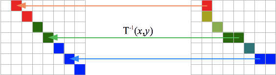
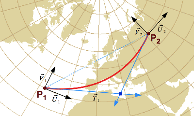

Apache SIS is a free software,
Java language library for developing geospatial desktop or server applications.
This library provides services for data discovery (metadata), reading and writing vector or raster data,
filtering the data and applying operations such as map projections.
Apache SIS data structures follow closely the geospatial models defined in the international standards published by
the Open Geospatial Consortium (OGC) and the International Organization for Standardization (ISO).
The annex provides more context about international standards.
The library is an implementation of OGC GeoAPI interfaces.
In a series of org.opengis.* packages, GeoAPI offers a set of implementation-neutral Java interfaces for geospatial applications.
These interfaces closely follow the specifications of the OGC, while interpreting and adapting them
to meet the needs of Java developers — for example, conforming with Java naming conventions.
The conceptual model of GeoAPI will be explained in detail in the chapters describing Apache SIS implementation.
However, we can get an overview of its content by consulting the page listing the mapping between
GeoAPI methods and the standards where they come from.
The annex provides more details about GeoAPI history and how to use it.
While Apache SIS is primarily a library for helping developers to create their own applications,
SIS provides also an optional JavaFX application for testing its capability to read, transform and visualize data files.
Screenshots of this application may be used in this document for illustrative purposes.
Note: this document contains mathematical formulas expressed in MathML.
For viewing those formulas, a MathML-capable browser (e.g. Firefox) is required.
1.1. Typographic and naming conventions
The elements defined in a computer language, such as classes and methods in Java or elements in an XML document,
appear in monospaced font in this document.
In order to facilitate an understanding of the relationships between Apache SIS and the standards,
these elements are also represented using the following colour codes:
Elements in blue are defined in an ISO
or OGC standard other than GeoAPI.
Elements in green are Java element defined in GeoAPI.
Elements in brown are defined in Apache SIS.
Elements left in black are either defined elsewhere (for example the standard Java library),
or there is simply no emphasis on that element for the discussion.
For example to represent a projected coordinate reference system (Mercator, Lambert, etc),
SC_ProjectedCRS is an UML and XML element defined by the ISO 19111 standard.
Then org.opengis.referencing.crs.ProjectedCRS is the implementation-neutral GeoAPI interface derived from that standard,
and org.apache.sis.referencing.crs.DefaultProjectedCRS is the implementation class provided by Apache SIS.
Apache SIS implements most GeoAPI interfaces by a classes of the same name than the interface
but prefixed by Abstract, Default or General word.
The General prefix is sometime used instead of Default
to indicate that alternative implementations are available for some specific cases.
For example the Envelope interface is implemented by at least two Apache SIS classes:
GeneralEnvelope and Envelope2D.
The first implementation can represent envelopes with any number of dimensions
while the second implementation is specialized for two-dimensional envelopes.
Apache SIS classes prefixed by Abstract should not (in principle) be instantiated.
Users should instantiate a non-abstract subclass instead.
However many SIS classes are only conceptually abstract,
without abstract Java keyword in class definition.
Such classes can be instantiated by a new AbstractXXX(…) statement despite being conceptually abstract.
Such instantiations should be avoided, but are nevertheless permitted in last resort when it is not possible to determine the exact subtype.
Text in gray boxes, like below (click to expand), are for information purpose only and can be ignored.
Note about the definition of terms
Source of term definitions
Standards sometimes favour the application of certain generic terms to particular contexts,
which may differ from the context in which other communities use these terms.
For example, the terms domain and range may apply to arbitrary mathematical functions in order to designate
a set of possible values of inputs and outputs respectively.
The ISO 19123 standard applies these terms to CV_Coverage objects,
seen as functions in which the domain is the set of spatio-temporal coordinates encompassed by the data,
and the range is the set of values encompassed.
However the functions to which above terms are applied by ISO standards are not the same as the functions to which they are applied by other libraries.
For example UCAR’s netCDF library
applies these terms instead to the function for converting pixel indices (its domain) to spatial-temporal coordinates (its range).
Thus the UCAR library’s range may be the domain of ISO 19123.
The Apache SIS library prefers as much as possible to use terms in the sense of OGC and ISO norms.
Particular care must be taken, however, with the interfaces between SIS and certain other external libraries,
in order to reduce the risk of confusion.
1.2. Installation
The easiest way to use Apache SIS is to declare Maven dependencies in the application project.
SIS is divided in about 20 modules, which allow applications to import a subset of the library.
The Apache SIS downloads page lists the main modules.
The pom.xml fragment below gives all dependencies needed by the code snippets in this document
(ignoring core modules such as sis-referencing which are inherited by transitive dependencies).
Note that the sis-epsg optional module is not under Apache license.
Inclusion of that module is subject to acceptation of EPSG terms of use.
It is optional but recommended;
see How to use EPSG geodetic dataset page for more information.
<properties>
<sis.version>1.2</sis.version>
</properties>
<dependencies>
<dependency>
<groupId>org.apache.sis.storage</groupId>
<artifactId>sis-geotiff</artifactId>
<version>${sis.version}</version>
</dependency>
<dependency>
<groupId>org.apache.sis.storage</groupId>
<artifactId>sis-netcdf</artifactId>
<version>${sis.version}</version>
</dependency>
<!-- Specialization of GeoTIFF reader for Landsat data. -->
<dependency>
<groupId>org.apache.sis.storage</groupId>
<artifactId>sis-earth-observation</artifactId>
<version>${sis.version}</version>
</dependency>
<!-- The following dependency can be omitted if XML support is not desired. -->
<dependency>
<groupId>org.glassfish.jaxb</groupId>
<artifactId>jaxb-runtime</artifactId>
<version>2.3.6</version>
<scope>runtime</scope>
</dependency>
<!-- This optional dependency requires agreement with EPSG terms of use. -->
<dependency>
<groupId>org.apache.sis.non-free</groupId>
<artifactId>sis-epsg</artifactId>
<version>${sis.version}</version>
<scope>runtime</scope>
</dependency>
</dependencies>
The sis-epsg optional module needs a directory where it will install the geodetic database.
That directory can be anywhere on the local machine, it shall exist (but should be initially empty),
and its location should be specified by the SIS_DATA environment variable.
For example on a Unix system
(replace user by the actual user name and some_directory by anything):
It is possible to avoid the need to setup SIS_DATA directory
if the sis-epsg dependency is replaced by sis-embedded-data.
However the latter is slower, and an SIS_DATA directory is still needed
for other purposes such as the installation of datum shift grids.
1.3. Data access overview
It is possible to instantiate data structures programmatically in memory.
But more often, data are read from files or other kinds of data stores.
There is different ways to access those data, but an easy way is to use
the DataStores.open(Object) convenience method.
The method argument can be a path to a data file
(File, Path, URL, URI), a stream
(Channel, DataInput, InputStream, Reader),
a connection to a data base (DataSource, Connection)
or other kinds of object specific to the data source.
The DataStores.open(Object) method detects data formats
and returns a DataStore instance for that format.
DataStore functionalities depend on the kind of data (coverage, feature set, time series, etc.).
But in all cases, there is always some metadata that can be obtained.
Metadata allows to identify the phenomenon or features described by the data
(temperature, land occupation, etc.),
the geographic area or temporal period covered by the data, together with their resolution.
Some rich data source provides also a data quality estimation,
contact information for the responsible person or organization,
legal or technical constraints on data usage,
the history of processing apply on the data,
expected updates schedule, etc.
Various data formats have their own metadata model, but Apache SIS translates all of them
in a unique metadata model in order to hide this heterogeneity.
This pivot model approach is often used by various libraries,
with Dublin Core as a popular choice.
For Apache SIS, the chosen pivot model is the ISO 19115 international standard.
This model organizes metadata in a tree structure where each information is accessible by a well-defined path,
regardless the origin of that information.
For example if a data format can provides a geographic bounding box encompassing all data,
then that information will always be accessible (regardless the data format) from the root Metadata object
under the identificationInfo node, extent sub-node,
geographicElement sub-node.
Example:
following code read a metadata file from a Landsat-8 image and prints the declared geographic bounding box:
try (DataStore store = DataStores.open(new File("LC81230522014071LGN00_MTL.txt"))) {
Metadata overview = store.getMetadata();
// Convenience method for fetching the geographic bounding box at the right location in metadata tree.GeographicBoundingBox bbox = Extents.getGeographicBoundingBox(overview);
System.out.println("The geographic bounding box is:");
System.out.println(bbox);
}
This example produces the following output (this area is located in Vietnam):
The ISO 19115 standard defines hundreds of elements.
Some of them will be introduced progressively in next chapters.
But in order to give some idea about what is available, the following table lists a few metadata elements.
Most of the nodes accept an arbitrary amount of values.
For example the extent node may contain many geographic areas.
Extract of a few metadata elements from ISO 19115
Element
Description
Metadata
Metadata about a dataset, service or other resources.
├─Reference system info
Description of the spatial and temporal reference systems used in the dataset.
├─Identification info
Basic information about the resource(s) to which the metadata applies.
│ ├─Citation
Name by which the cited resource is known, reference dates, presentation form, etc.
│ │ └─Cited responsible party
Role, name, contact and position information for individuals or organizations that are responsible for the resource.
│ ├─Topic category
Main theme(s) of the resource (e.g. farming, climatology, environment, economy, health, transportation, etc.).
│ ├─Descriptive keywords
Category keywords, their type, and reference source.
│ ├─Spatial resolution
Factor which provides a general understanding of the density of spatial data in the resource.
│ ├─Temporal resolution
Smallest resolvable temporal period in a resource.
│ ├─Extent
Spatial and temporal extent of the resource.
│ ├─Resource format
Description of the format of the resource(s).
│ ├─Resource maintenance
Information about the frequency of resource updates, and the scope of those updates.
│ └─Resource constraints
Information about constraints (legal or security) which apply to the resource(s).
├─Content info
Information about the feature catalog and describes the coverage and image data characteristics.
│ ├─Imaging condition
Conditions which affected the image (e.g. blurred image, fog, semi darkness, etc.).
│ ├─Cloud cover percentage
Area of the dataset obscured by clouds, expressed as a percentage of the spatial extent.
│ └─Attribute group
Information on attribute groups of the resource.
│ ├─Content type
Types of information represented by the values (e.g. thematic classification, physical measurement, etc.).
│ └─Attribute
Information on an attribute of the resource.
│ ├─Sequence identifier
Unique name or number that identifies attributes included in the coverage.
│ ├─Peak response
Wavelength at which the response is the highest.
│ ├─Min/max value
Minimum/maximum value of data values in each sample dimension included in the resource.
│ ├─Units
Units of data in each dimension included in the resource.
│ └─Transfer function type
Type of transfer function to be used when scaling a physical value for a given element.
├─Distribution info
Information about the distributor of and options for obtaining the resource(s).
│ ├─Distribution format
Description of the format of the data to be distributed.
│ └─Transfer options
Technical means and media by which a resource is obtained from the distributor.
├─Data quality info
Overall assessment of quality of a resource(s).
├─Acquisition information
Information about the acquisition of the data.
│ ├─Environmental conditions
Record of the environmental circumstances during the data acquisition.
│ └─Platform
General information about the platform from which the data were taken.
│ └─Instrument
Instrument(s) mounted on a platform.
└─Resource lineage
Information about the provenance, sources and/or the production processes applied to the resource.
├─Source
Information about the source data used in creating the data specified by the scope.
└─Process step
Information about events in the life of a resource specified by the scope.
Among metadata elements introduced in this chapter, there is one which will be the topic of
a dedicated chapter: referenceSystemInfo.
Its content is essential for accurate data positioning;
without this element, even positions given by latitudes and longitudes are ambiguous.
Reference systems have many characteristics that make them apart from other metadata:
they are immutable, can not be handled by MetadataStandard.ISO_19115.asValueMap(…),
have a particular text representation and are associated to an engine
performing coordinate transformation from one reference system to an other.
2. Data as coverage
Images, or rasters, are a particular case of a data structure called a coverage.
A coverage is a function which returns attribute values from an input coordinate.
The set of valid input values is called the domain, while the set of possible output values is called the range.
The domain is often the spatio-temporal area covered by the data,
but SIS does not prevents coverages from extending to other dimensions.
For example, thermodynamic studies often use an area where the dimensions are temperature and pressure.
Example:
Digital Elevation Models (DEM) are often represented as images where pixel values are terrain elevation values.
This image can be used as the basis of an h = f(φ,λ) function providing
(eventually by interpolations between pixels) the elevation h at the geographic coordinate (φ,λ).
In that case, the f function is the coverage,
the geographic envelope of the image is the domain,
and the set of pixel values h that this function can return is the range.
Ranges may be finite or infinite, and are not necessarily numerical.
For example, the values returned by a coverage may come from an enumeration (“this is a forest”, “this is a lake”, etc.).
However in the enumeration case, interpolations are not allowed.
A coverage without interpolation is called a discrete coverage
while a coverage that allows interpolations is called a continuous coverage.
Different types of coverages may also be characterized by the geometry of their cells.
In particular, a coverage is not necessarily composed of quadrilateral cells.
However, given that quadrilateral cells are by far the most frequent (since this is the usual geometry of image pixels),
we use the grid coverage term to specify coverages composed of such cells.
2.1. Grid coverage domain
The domain of a coverage is the set of valid input values.
In Apache SIS, the domain of grid coverages is described by the GridGeometry class.
This class contains the following information:
A grid extent (a.k.a. grid envelope), often inferred from the image size in pixels.
A grid to CRS conversion, typically as a scale followed by a translation.
A georeferenced envelope, which can be inferred from the grid extent and the grid to CRS conversion.
A Coordinate Reference System (CRS) which is the target of the grid to CRS conversion.
An estimation of grid resolution along each CRS axes.
An indication of whether conversion for some axes is linear or not.
One of the most important property listed above is the grid to CRS conversion,
which defines how to map pixel coordinates to "real world" coordinates such as latitudes and longitudes.
This relationship is often linear (an affine transform), but not necessarily;
GridGeometry accepts non-linear conversions as well.
2.1.1. Affine transform
Among the many kinds of operations performed by GIS software products on spatial coordinates,
affine transforms are both relatively simple and very common.
Affine transforms can represent any combination of scales, shears, flips, rotations and translations,
which are linear operations.
Affine transforms can not handle non-linear operations like map projections,
but the affine transform capabilities nevertheless cover many other cases:
Axis order changes, for example from (latitude, longitude) to (longitude, latitude).
Axis direction changes, for example the y axis oriented toward down in images.
Prime meridian rotations, for example from Paris to Greenwich prime meridian.
Dimensionality changes, for example from 3-dimensional coordinates to 2-dimensional coordinates by dropping the height.
Unit conversion, for example from feet to metres.
Pixel to geodetic coordinate, for example the conversion represented in the .tfw files associated to some TIFF images.
Part of map projections, for example the False Easting, False Northing and Scale factor parameters.
Affine transforms can be concatenated efficiently.
No matter how many affine transforms are chained, the result can be represented by a single affine transform.
Affine transforms are extensively used by Apache SIS for “grid to CRS” conversions.
Given an image with pixel coordinates represented by (x,y) tuples and given the following assumptions:
There is no shear, no rotation and no flip.
All pixels have the same width in degrees of longitude.
All pixels have the same height in degrees of latitude.
Pixel indices are positive integers starting at (0,0) inclusive.
Then conversions from pixel coordinates (x,y)
to geographic coordinates (λ,φ) can be represented by the following equations,
where Nx is the image width and
Ny the image height in number of pixels:
Above equations can be represented in matrix form as below:
In this particular case, scale factors S are the pixel size in degrees
and translation terms T are the geographic coordinate of an image corner
(not necessarily the lower-left corner if some axes have been flipped).
This straightforward interpretation holds because of above-cited assumptions, but
matrix coefficients become more complex if the image has shear or rotation
or if pixel coordinates do not start at (0,0).
However it is not necessary to use more complex equations for supporting more generic cases.
The following example starts with an “initial conversion” matrix
where the S and T terms are set to the most straightforward values.
Then the y axis direction is reversed for matching the most common convention in image coordinate systems (change 1),
and axis are swapped resulting in latitude before longitude (change 2).
Note that when affine transform concatenations are written as matrix multiplications, operations are ordered from right to left:
A×B×C is equivalent to first applying operation C,
then operation B and finally operation A.
Change 2
Change 1
Initial conversion
Concatenated operation
×
×
=
A key principle is that there is no need to write Java code dedicated to above kinds of axis changes.
Those operations, and many other, can be handled by matrix algebra.
This approach makes easier to write generic code and improves performance.
Apache SIS follows this principle by using affine transforms for every operations
that can be performed by such transform.
For instance there is no code dedicated to changing order of ordinate values in a coordinate.
This section is incomplete. See Javadoc for more details.
2.2. Sample dimensions
The range of a coverage is the set of valid output values.
In Apache SIS, the distinction between ranges of numerical values and range of any types of values is represented by
NumberRange and Range classes respectively.
The NumberRange is used more often, and is also the one that most closely approaches the
the common mathematical concept of an interval.
This textual representation approaches the specifications of ISO 31-11 standard,
except that the comma is replaced by the character “…” as the separator of minimal and maximal values.
For example, “[0 … 256)” represents the range of values from 0 inclusive to 256 exclusive.
Range objects are only indirectly associated with coverages.
In SIS, the values that can return coverages are described by objects of the
SampleDimension type.
It is these that contain instances of Range,
as well as other information such as transfer function (described later).
This section is incomplete. See Javadoc for more details.
The SampleDimension.Builder provides convenience methods for building the sample dimensions of a coverage.
The usage pattern is to invoke the following methods:
setName(…) for giving a name to a band.
addQuantitative(…) for declaring a range of sample values to convert to units of measurement.
addQualitative(…) for declaring "no data" values.
setBackground(…) for declaring a "no data" value which can also be used for filling empty space.
3. Geometries
Each geometric object is considered as an infinite set of points
(except the Point object which contains only itself).
To better represent this concept, the TransfiniteSet interface
can be seen as a Set of potentially infinite size in which the elements are points.
All geometries are specializations of TransfiniteSet.
There is two types of structures to represent a point: Point and DirectPosition.
The first type is a true geometry and may therefore be relatively cumbersome, depending on the implementation.
The second type is not formally considered to be a geometry;
it extends neither Geometry nor TransfiniteSet.
It barely defines any operations besides the storing of a sequence of numbers representing a coordinate.
It may therefore be a more lightweight object.
In order to allow the API to work equally with these two types of positions,
Position is defined as a common interface implemented by DirectPosition and Point.
In practice, the great majority of Apache SIS’s API works on DirectPositions,
and occasionally on Positions when it seems useful to also allow geometric points.
3.1. Envelopes
Envelopes store minimal and maximal coordinate values of a geometry.
Envelopes are not geometries themselves; they are not infinite sets of points (TransfiniteSet).
There is no guarantee that all the positions contained within the limits of an envelope are geographically valid.
Envelopes must be seen as information about extreme values that might take the coordinates of a geometry as if
each dimension were independent of the others, nothing more.
Nevertheless, we speak of envelopes as rectangles, cubes or hyper-cubes (depending on the number of dimensions)
in order to facilitate discussion, while bearing in mind their non-geometric nature.
Example:
We could test whether a position is within the limits of an envelope.
A positive result does not guarantee that the position is within the geometry delimited by the envelope,
but a negative result guarantees that it is outside the geometry.
We can perform intersection tests in the same way.
On the other hand, it makes little sense to apply a rotation to an envelope,
as the result may be very different from that which we would obtain by performing a rotation on the original geometry,
and then recalculating its envelope.
An envelope might be represented by two positions corresponding to two opposite corners of a rectangle,
cube or hyper-cube.
For the first corner, we often take the one whose ordinates all have the maximal value (upperCorner).
When displayed using a conventional system of coordinates (with y axis values running upwards),
these two positions appear respectively in the lower left corner and the upper right corner of a rectangle.
Care must be taken with different coordinate systems, however, which may vary the positions of these corners on the screen.
The expressions lower corner and upper corner should thus be understood in the mathematical rather than the visual sense.
3.1.1. Crossing the antimeridian
Minimums and maximums are the values most often assigned to lowerCorner
and upperCorner.
But the situation becomes complicated when an envelope crosses the antimeridian (−180° or 180° longitude).
For example, an envelope 10° in size may begin at 175° longitude and end at −175°.
In this case, the longitude value assigned to lowerCorner is greater than that assigned to upperCorner.
Apache SIS therefore uses a slightly different definition of these two corners:
lowerCorner:
the starting point, if we move along the inside of the envelope in the direction of ascending values.
upperCorner:
the end-point, if we move along the inside of the envelope in the direction of ascending values.
If the envelope does not cross the antimeridian, these two definitions are equivalent to the selection of minimal and
maximal values respectively. This is the case in the green rectangle in the figure below.
When the envelope crosses the antimeridian, the lowerCorner and the
upperCorner appear again at the bottom and top of the rectangle
(assuming a standard system of coordinates), so their names remain appropriate from a visual standpoint.
However, the left and right positions are switched.
This case is illustrated by the red rectangle in the figure below.
The notions of inclusion and intersection, however, are interpreted slightly differently in these two cases.
In the usual case where the envelope does not cross the antimeridian, the green rectangle covers a region of inclusion.
The regions excluded from this rectangle continue on to infinity in all directions.
In other words, the region of inclusion is not repeated every 360°.
But in the case of the red rectangle, the information provided by the envelope actually covers a region of exclusion
between the two edges of the rectangle. The region of inclusion extends to infinity to the left and right.
We could stipulate that all longitudes below −180° or above 180° are considered excluded,
but this would be an arbitrary decision that would not be an exact counterpart to the usual case (green rectangle).
A developer may wish to use these values, for example, in a mosaic where the map of the world is repeated several times
horizontally and each repetition is considered distinct.
If developers wish to perform operations as though the regions of inclusion or exclusion were repeated every 360°,
they themselves will have to bring the longitudinal values between −180° and 180° in advance.
All the add(…), contains(…),
intersect(…), etc. functions of all the envelopes defined in the
org.apache.sis.geometry package perform their calculations according to this convention.
In order for functions such as add(…) to work correctly,
all objects involved must use the same coordinate reference system, including the same range of values.
Thus an envelope that expresses longitudes in the range [−180 … +180]° is not compatible with an envelope that expresses
longitudes in the range [0 … 360]°.
The conversions, if necessary, are up to the user
(the Envelopes class provides convenience methods to do this).
Moreover, the envelope’s coordinates must be included within the system of coordinates,
unless the developer explicitly decides to consider (for example) 300° longitude as a position distinct from −60°.
The GeneralEnvelope class provides a normalize() method to bring
coordinates within the desired limits, sometimes at the cost of lower values being higher than
upper values.
3.1.2. Transforming to another reference system
Geographic information systems often need to transform an envelope
from one Coordinate Reference System (CRS) to another.
But a naive approach transforming the 4 corners is not sufficient.
The figure below shows an envelope before a map projection and the geometric shape
that we would get if all points (not only the corners) were projected.
The resulting geometric shape is more complex than a rectangle because of the curvature caused by the map projection.
Computing the envelope that contains the 4 corners of that shape is not enough,
because the area in the bottom of the projected shape is lower than the two bottom corners.
That surface would be outside the envelope.
Envelope before projection
Geometric shape after projection
Sampling a larger number of points reduces the problem but does not resolve it.
Map projection derivatives offer a more efficient way to resolve this problem
(see the annex for more mathematical details).
Another complication occurs if the envelope contains the North or South pole.
For making a long story short, transforming an envelope is a lot more complicated than it looks like.
Apache SIS contains a few utility methods for making this task easier.
For transforming an envelope to another CRS (WGS 84 / World Mercator in this example):
If envelopes are transformed in the goal of using a common CRS before to compute the union of many envelopes,
an additional complication is that each envelope may use a CRS with a relatively small domain of validity.
The union operation needs to find a CRS valid in a domain large enough for containing all envelopes.
It may be a CRS different than all CRS used by the source envelopes.
Apache SIS has an utility method for handling this additional complexity.
This method accepts an arbitrary amount of envelopes that may be in different CRS:
Envelope union = Envelopes.union(envelope1, envelope2, envelope3);
4. Spatial reference systems
For locating a point on Earth one can use identifiers like city name or postal address
— an approach known as spatial reference systems by identifiers —
or use numerical values valid in a given coordinate system like latitudes and longitudes
— an approach known as spatial reference systems by coordinates.
Each reference system implies approximations like
the choice of a figure of the Earth (geoid, ellipsoid, etc.) used as an approximation of Earth shape,
the choice of geometric properties (angles, distances, etc.) to be preserved when a map is shown on plane surface, and
a lost of precision when coordinates are transformed to systems using a different datum.
A very common misbelief is that one can avoid this complexity by using a single coordinate reference system
(typically WGS84) as a universal system for all data.
The next chapters will explain why the reality is not so simple.
Whether a universal reference system can suit an application needs or not depends on the desired positional accuracy
and the kind of calculations to be performed with the data.
Unless otherwise specified, Apache SIS aims to represent coordinates on Earth with an accuracy of one centimetre or better.
But the accuracy can be altered by various situations:
Points should be inside the domain of validity as given by ReferenceSystem.getDomainOfValidity().
Distance measurements in a given map projection are true only is some special locations,
named for instance “standards parallels”.
Positional accuracy is altered after coordinate transformations.
The new accuracy is described by CoordinateOperation.getCoordinateOperationAccuracy().
Finding the most appropriate coordinate transformation parameters require the use of a geodetic dataset like EPSG.
Declaring those parameters within the CRS (for example with a TOWGS84 element) is often not sufficient.
The sis-referencing module provides a set of classes implementing
different specializations of the ReferenceSystem interface, together with required components.
Those implementations store spatial reference system descriptions, together with metadata like their domain of validity.
However those objects do not perform any operation on coordinate values.
Coordinates conversions or transformations are performed by another family of types,
with CoordinateOperation as the root interface.
Those types will be discussed in another section.
4.1. Coordinate reference systems
Spatial reference systems by coordinates provide necessary information for mapping numerical coordinate values
to real-world locations. In Apache SIS, most information is contained (directly or indirectly) in
classes with a name ending in CRS, the abbreviation of Coordinate Reference System.
Those objects contain:
A datum, which specifies among other things which ellipsoid to use as an Earth shape approximation.
A description for each axis: name, direction, units of measurement, range of values.
Sometime a list of parameters, especially when using map projections.
Those systems are described by the ISO 19111 standard (Referencing by Coordinates),
which replaces for most parts the older OGC 01-009 standard (Coordinate Transformation Services).
Those standards are completed by two other standards defining exchange formats:
ISO 19136 and 19162 respectively for the
Geographic Markup Language (GML) — a XML format which is quite detailed but verbose —
and the Well-Known Text (WKT) — a text format easier to read by humans.
4.1.1. Map projections
Map projections represent a curved surface (the Earth surface) on a plane surface (a map or a computer screen).
Every rendering of geospatial data on a flat screen uses some kind of map projection, sometime implicitly.
Well-designed map projections provide some control over deformations:
one can preserve the angles, another projection can preserve the areas,
but none can preserve both in same time.
The geometric properties to preserve depend on the feature to represent and the work to do on that feature.
For example countries elongated along the East-West axis often use a Lambert projection,
while countries elongated along the North-South axis prefer a Transverse Mercator projection.
There is thousands of projected CRS in use around the world.
Many of them are published in the EPSG geodetic database.
The easiest way to get a projected CRS with Apache SIS is to use its EPSG code.
For example the following code gets the definition of the JGD2000 / UTM zone 54N CRS
(for Japan from 138°E to 144°E):
Other ways to get a coordinate reference system will be given in a next section.
4.1.2. Geographic reference systems
All map projections are based on a geodetic (usually geographic) CRS.
A geodetic CRS is a coordinate reference system with latitude, longitude and sometime height axes.
There is many kinds of latitudes and longitudes,
but two common kinds supported by Apache SIS are geodetic and geocentric latitudes.
Those two angles differ slightly in the way they intersect the ellipsoid surface.
On Earth surface, the difference between those two kinds of latitude varies between 0 and about 20 km.
When peoples talk about latitudes and longitudes, they usually mean geodetic latitudes and longitudes.
A coordinate reference system using such latitudes and longitudes is said geographic
and is represented by the GeographicCRS interface.
Systems using the other kinds of latitude are represented by other CRS interfaces.
Theoretically, data expressed in a geographic CRS can never be rendered directly on a flat screen
(they could be rendered directly on a planetarium dome however).
In practice we allow data rendering in a geographic CRS,
but this process implicitly uses a Plate Carrée projection.
4.1.3. Vertical and temporal dimensions
TODO
4.1.4. Coordinate systems
A Coordinate System (CS) defines the set of axes that spans a given coordinate space.
Each axis defines an approximative direction (north, south, east, west, up, down, port, starboard, past, future, etc.),
units of measurement, minimal and maximal values, and what happen after reaching those extremum.
For example in longitude case, after +180° the coordinate values continue at −180°.
Axes having such behavior are flagged by the RangeMeaning.WRAPAROUND code.
Each Coordinate Reference System (CRS)
is associated with exactly one Coordinate System (CS).
Some properties that we can get from a coordinate system and its axes are shown below.
Axes are numbered from 0 to cs.getDimension()-1 inclusive.
CoordinateSystem cs = crs.getCoordinateSystem();
CoordinateSystemAxis secondAxis = cs.getAxis(1); // For a geographic CRS, this is usually geodetic longitude.
String abbreviation = secondAxis.getAbbreviation(); // For a longitude axis, this is usually "λ", "L" or "lon".AxisDirection direction = secondAxis.getDirection(); // For a longitude axis, this is usually EAST. Another occasional value is WEST.
Unit<?> units = secondAxis.getUnit(); // For a longitude axis, this is usually Units.DEGREE.double minimum = secondAxis.getMinimumValue(); // For a longitude axis, this is usually −180°. Another common value is 0°.double maximum = secondAxis.getMaximumValue(); // For a longitude axis, this is usually +180°. Another common value is 360°.RangeMeaning atEnds = secondAxis.getRangeMeaning(); // For a longitude axis, this is WRAPAROUND.
In addition to axis definitions, another important coordinate system characteristic is their type
(CartesianCS, SphericalCS, etc.).
The CS type implies the set of mathematical rules for calculating geometric quantities like angles, distances and surfaces.
Usually the various CS subtypes do not define any new Java methods compared to the parent type,
but are nevertheless important for type safety.
For example many calculations or associations are legal only when all axes are perpendicular to each other.
In such case the coordinate system type is restricted to CartesianCS in method signatures.
Coordinate systems are mathematical concepts; they do not contain any information
about where on Earth is located the system origin.
Consequently coordinate systems alone are not sufficient for describing a location;
they must be combined with a datum (or reference frame).
Those combinations form the coordinate reference systems described in previous sections.
4.1.5. Geodetic datum
Since the real topographic surface is difficult to represent mathematically, it is not used directly.
A slightly more convenient surface is the geoid,
a surface where the gravitational field has the same value everywhere (an equipotential surface).
This surface is perpendicular to the direction of a plumb line at all points.
The geoid surface would be equivalent to the mean sea level if all oceans where at rest,
without winds or permanent currents like the Gulf Stream.
While much smoother than topographic surface, the geoid surface still have hollows and bumps
caused by the uneven distribution of mass inside Earth.
For more convenient mathematical operations, the geoid surface is approximated by an ellipsoid.
This “figure of Earth” is represented in GeoAPI by the Ellipsoid interface,
which is a fundamental component in coordinate reference systems of type GeographicCRS and ProjectedCRS.
Tenth of ellipsoids are commonly used for datum definitions.
Some of them provide a very good approximation for a particular geographic area
at the expense of the rest of the world for which the datum was not designed.
Other datums are compromises applicable to the whole world.
Example:
the EPSG geodetic dataset defines among others the “WGS 84”, “Clarke 1866”, “Clarke 1880”,
“GRS 1980” and “GRS 1980 Authalic Sphere” (a sphere of same surface than the GRS 1980 ellipsoid).
Ellipsoids may be used in various places of the world or may be defined for a very specific region.
For example in USA at the beginning of XXth century,
the Michigan state used an ellipsoid based on the “Clarke 1866” ellipsoid but with axis lengths expanded by 800 feet.
This modification aimed to take in account the average state height above mean sea level.
The main properties that we can get from an ellipsoid are given below.
The semi-major axis length is sometime called equatorial radius and
the semi-minor axis length the polar radius.
The inverse flattening factor is apparently superfluous since it can be derived from other quantities,
but many ellipsoid definitions provide this factor instead of semi-minor axis length.
Unit<Length> units = ellipsoid.getAxisUnit();
double semiMajor = ellipsoid.getSemiMajorAxis(); // In units of measurement given above.double semiMinor = ellipsoid.getSemiMinorAxis(); // In units of measurement given above.double ivf = ellipsoid.getInverseFlattening(); // = semiMajor / (semiMajor - semiMinor).
For defining a geodetic system in a country, a national authority selects an ellipsoid matching closely the country surface.
Differences between that ellipsoid and the geoid’s hollows and bumps are usually less than 100 metres.
Parameters that relate an Ellipsoid to the Earth surface (for example the position of ellipsoid center)
are represented by instances of GeodeticDatum.
Many GeodeticDatum definitions can use the same Ellipsoid,
but with different orientations or center positions.
Before the satellite era, geodetic measurements were performed exclusively from Earth surface.
Consequently, two islands or continents not in range of sight from each other were not geodetically related.
So the North American Datum 1983 (NAD83) and the European Datum 1950 (ED50)
are independent: their ellipsoids have different sizes and are centered at a different positions.
The same geographic coordinate will map different locations on Earth depending on whether the coordinate
uses one reference system or the other.
The GPS invention implied the creation of a
world geodetic system named WGS84.
The ellipsoid is then unique and centered at the Earth gravity center.
GPS provides at any moment the receptor absolute position on that world geodetic system.
But since WGS84 is a world-wide system, it may differs significantly from local systems.
For example the difference between WGS84 and the European system ED50 is about 150 metres,
and the average difference between WGS84 and the Réunion 1947 system is 1.5 kilometres.
Consequently we shall not blindly use GPS coordinates on a map,
as transformations to the local system may be required.
Those transformations are represented in GeoAPI by instances of the Transformation interface.
The WGS84 ubiquity tends to reduce the need for Transformation operations with recent data,
but does not eliminate it.
The Earth moves under the effect of plate tectonic and new systems are defined every years for taking that fact in account.
For example while NAD83 was originally defined as practically equivalent to WGS84,
there is now (as of 2016) a 1.5 metres difference.
The Japanese Geodetic Datum 2000 was also defined as practically equivalent to WGS84,
but the Japanese Geodetic Datum 2011 now differs.
Even the WGS84 datum, which was a terrestrial model realization at a specific time,
got revisions because of improvements in instruments accuracy.
Today, at least six WGS84 versions exist.
Furthermore many borders were legally defined in legacy datums, for example NAD27 in USA.
Updating data to the new datum would imply transforming some straight lines or simple geometric shapes
into more irregular shapes, if the shapes are large enough.
Contrarily to other kinds of objects introduced in this section,
there is not many useful information that we can get from a Datum instance except its name.
It is difficult to translate in programming language how a datum is related to the Earth.
Often, the most we can do is to consider that having two datums with different names implies that the same location on Earth
has different coordinate values when using those different datums, even if the ellipsoid is identical in both cases.
Coordinate transformations between datums require some kind of database.
4.2. Fetching a spatial reference system
TODO:
Using CommonCRS
Looking CRS defined by authorities with CRSAuthorityFactory
Reading definitions in GML or WKT format
Constructing programmatically using CRSFactory
4.2.1. Adding new CRS definitions
TODO
4.3. Axis order
The axis order is specified by the authority (typically a national agency) defining the Coordinate Reference System (CRS).
The order depends on the CRS type and the country defining the CRS.
In the case of geographic CRS, the (latitude, longitude) axis order is widely used by geographers and pilots for centuries.
However software developers tend to consistently use the (x, y) order for every kind of CRS.
Those different practices resulted in contradictory definitions of axis order for almost every CRS of kind GeographicCRS,
for some ProjectedCRS in the South hemisphere (South Africa, Australia, etc.) and for some polar projections among others.
Recent OGC standards mandate the use of axis order as defined by the authority.
Oldest OGC standards used the (x, y) axis order instead, ignoring any authority specification.
Many software products still use the old (x, y) axis order,
maybe because such uniformization makes CRS implementation and usage apparently easier.
Apache SIS supports both conventions with the following approach:
by default, SIS creates CRS with axis order as defined by the authority.
Those CRS are created by calls to the CRS.forCode(String) method
and the actual axis order can be verified after the CRS creation with System.out.println(crs).
But if (x, y) axis order is wanted for compatibility with older OGC specifications or other software products,
then CRS forced to longitude first axis order can be created by a call to the following method:
CoordinateReferenceSystem crs = …; // CRS obtained by any means.
crs = AbstractCRS.castOrCopy(crs).forConvention(AxesConvention.RIGHT_HANDED)
Among the legacy OGC standards that used the non-conform axis order,
an influent one is version 1 of the Well Known Text (WKT) format specification.
According that widely-used format, WKT 1 definitions without explicit AXIS[…] elements
shall default to (longitude, latitude) or (x, y) axis order.
In version 2 of WKT format, AXIS[…] elements are no longer optional
and should contain an explicit ORDER[…] sub-element for making the intended order yet more obvious.
But if AXIS[…] elements are nevertheless missing in a WKT 2 definition,
Apache SIS defaults to (latitude, longitude) order.
So in summary:
Default WKT 1 axis order of geographic CRS is (longitude, latitude) as mandated by OGC 01-009 specification.
Default WKT 2 axis order of geographic CRS is (latitude, longitude),
but this is SIS-specific as ISO 19162 does not mention default axis order.
To avoid ambiguities, users are encouraged to always provide explicit AXIS[…] elements in their WKT.
4.4. Coordinate operations
Given a source coordinate reference system (CRS) in which existing coordinate values are expressed,
and a target coordinate reference system in which coordinate values are desired,
Apache SIS can provide a coordinate operation performing the conversion or transformation work.
The search for coordinate operations may use a third argument, optional but recommended,
which is the geographic area of the data to transform.
That later argument is recommended because coordinate operations are often valid only in a some geographic area
(typically a particular country or state), and many transformations may exist
for the same pair of source and target CRS but different domain of validity.
Different coordinate operations may also be different compromises between accuracy and their domain of validity,
and specifying a smaller area of interest may allow Apache SIS to select a more accurate operation.
Example:
the EPSG geodetic dataset (as of version 7.9) defines 77 coordinate operations from the
North American Datum 1927 (EPSG:4267) coordinate reference system to the
World Geodetic System 1984 (EPSG:4326) CRS.
There is one operation valid only for coordinate transformations in Québec,
another operation valid for coordinate transformations in Texas west of 100°W,
another operation for the same state but east of 100°W, etc.
If the user did not specified any geographic area of interest,
then Apache SIS defaults on the coordinate operation which is valid in the largest area.
In this example, the “largest area” criterion results in the selection of a coordinate operation valid for Canada,
not USA.
4.4.1. Getting a coordinate operation
The easiest way to obtain a coordinate operation from above-cited information
is to use the org.apache.sis.referencing.CRS convenience class:
Among the information provided by CoordinateOperation object, the following are of special interest:
The domain of validity, either as a textual description (e.g. “Canada – onshore and offshore”)
or with the coordinates of a geographic bounding box.
The positional accuracy, which may be anything from 1 centimetre to a few kilometres.
The coordinate operation subtype. Among them, two sub-types provide the same functionalities but with a significant conceptual difference:
Coordinate conversions are fully determined by mathematical formulas.
Those conversions would have an infinite precision if it was not for the unavoidable rounding errors
inherent to floating-point calculations.
Map projections are in this category.
Coordinate transformations are defined empirically.
They often have errors of a few metres which are not caused by limitation in computer accuracy.
Those errors exist because transformations are only approximations of a more complex reality.
Datum shifts from NAD27 to NAD83
are in this category.
If the coordinate operation is an instance of Transformation,
then the instance selected by SIS may be one among many possibilities depending on the area of interest.
Furthermore its accuracy is usually less than the centimetric accuracy that we can expect from a Conversion.
Consequently verifying the domain of validity and the positional accuracy declared in the transformation metadata is of particular importance.
4.4.2. Executing an operation on coordinate values
The CoordinateOperation object introduced in above section provides high-level informations
(source and target CRS, domain of validity, positional accuracy, operation parameters, etc).
The actual mathematical work is performed by a separated object obtained by a call to CoordinateOperation.getMathTransform().
At the difference of CoordinateOperation instances, MathTransform instances do not carry any metadata.
They are kind of black box which know nothing about the source and target CRS
(actually the same MathTransform can be used for different pairs of CRS if the mathematical work is the same), domain or accuracy.
Furthermore MathTransform may be implemented in a very different way than what CoordinateOperation said.
In particular many conceptually different coordinate operations (e.g. longitude rotations,
change of units of measurement, conversions between two Mercator projections on the same datum, etc.)
are implemented by MathTransform as affine transforms and concatenated for efficiency,
even if CoordinateOperation reports them as a chain of Mercator and other operations.
The “conceptual versus real chain of coordinate operations” section explains the differences in more details.
The following Java code performs a map projection from geographic coordinates on the World Geodetic System 1984 (WGS84) datum
coordinates in the WGS 84 / UTM zone 33N coordinate reference system.
In order to make the example a little bit simpler, this code uses predefined constants given by the CommonCRS convenience class.
But more advanced applications will typically use EPSG codes instead.
Note that all geographic coordinates below express latitude before longitude.
import org.opengis.geometry.DirectPosition;
import org.opengis.referencing.crs.CoordinateReferenceSystem;
import org.opengis.referencing.operation.CoordinateOperation;
import org.opengis.referencing.operation.TransformException;
import org.opengis.util.FactoryException;
import org.apache.sis.referencing.CRS;
import org.apache.sis.referencing.CommonCRS;
import org.apache.sis.geometry.DirectPosition2D;
publicclass MyApp {
publicstaticvoid main(String[] args) throwsFactoryException, TransformException {
CoordinateReferenceSystem sourceCRS = CommonCRS.WGS84.geographic();
CoordinateReferenceSystem targetCRS = CommonCRS.WGS84.universal(40, 14); // Get whatever zone is valid for 14°E.CoordinateOperation operation = CRS.findOperation(sourceCRS, targetCRS, null);
// The above lines are costly and should be performed only once before to project many points.// In this example, the operation that we got is valid for coordinates in geographic area from// 12°E to 18°E (UTM zone 33) and 0°N to 84°N.DirectPosition ptSrc = newDirectPosition2D(40, 14); // 40°N 14°EDirectPosition ptDst = operation.getMathTransform().transform(ptSrc, null);
System.out.println("Source: " + ptSrc);
System.out.println("Target: " + ptDst);
}
}
4.4.3. Partial derivatives of coordinate operations
Previous section shows how to project a coordinate from one reference system to another one.
There is another, less known, operation which does not compute the projected coordinates of a given point,
but instead the derivative of the projection function at that point.
Let P be a map projection converting degrees of latitude and longitude (φ, λ)
into projected coordinates (x, y) in metres.
The formula below represents the map projection result as a column matrix
(reason will become clearer soon):
The first matrix column tells us that if we apply a displacement of 1° of latitude from the (φ, λ) position,
— in other words if we move at the (φ + 1, λ) geographic position —
then the projected coordinates would be displaced by (∂x, ∂λ) metres
— in other words they would become (x + ∂x, y + ∂y) —
if the map projection is approximated by an affine transform valid at the (φ, λ) position.
Similarly the last matrix column gives us the displacement that happen on the projected coordinate
if we apply a displacement of 1° of longitude on the source geographic coordinate under the same assumption.
We can visualize such displacements in a figure like below.
This figure shows the derivative at two points, P1 and P2,
for emphasing that the result change for every points.
In that figure, vectors U et V stand for the first and second column respectively
in the Jacobian matrices.
where vectors are related to the matrix by:
Above figure shows one usage of map projection derivatives:
they provide the direction of parallels and meridians at a given location in a map projection.
One can use that information for determining if axes have been swapped or their direction reversed.
But the usefulness of map projection derivatives goes further.
The annex explains how derivatives are used by the Apache SIS
implementation of envelope and raster reprojections.
4.4.4. Chain of coordinate operation steps
Coordinate operations may include many steps, each with their own set of parameters.
For example transformations from one datum (e.g. NAD27) to another datum (e.g. WGS84)
can be approximated by an affine transform (translation, rotation and scale) applied on the geocentric coordinates.
This implies that the coordinates must be converted from geographic to geocentric domain before the affine transform,
then back to geographic domain after the affine transform.
The result is a three-steps process illustrated in the “Conceptual chain of operations” column of the example below.
However because that operation chain is very common, the EPSG geodetic dataset provides a shortcut
named “Geocentric translation in geographic domain”.
Using this operation, the conversion steps between geographic and geocentric CRS are implicit.
Consequently the datum shifts as specified by EPSG appears as if it was a single operation,
but the real operation executed by Apache SIS is divided in more steps.
Example:
transformation of geographic coordinates from NAD27 to WGS84 in Canada
can be approximated by the EPSG:1172 coordinate operation.
This single EPSG operation is actually a chain of three operations in which two steps are implicit.
The operation as specified by EPSG is shown in the first column below.
The same operation with the two hidden steps made explicit is shown in the second column.
The last column shows the same operation as implemented by Apache SIS under the hood,
which contains additional operations discussed below.
For all columns, input coordinates of the first step and output coordinates of the last step
are (latitude, longitude) coordinates in degrees.
Operation specified by EPSG:
Geocentric translation in geographic domain
X-axis translation = −10 m
Y-axis translation = 158 m
Z-axis translation = 187 m
Conversions between geographic and geocentric domains are implicit.
The semi-major and semi-minor axis lengths required for those conversions
are inferred from the source and target datum.
Conceptual chain of operations:
Geographic to geocentric
Source semi-major = 6378206.4 m
Source semi-minor = 6356583.8 m
Geocentric translation
X-axis translation = −10 m
Y-axis translation = 158 m
Z-axis translation = 187 m
Geocentric to geographic
Target semi-major = 6378137.0 m
Target semi-minor ≈ 6356752.3 m
Axis order and units are implicitly defined by the source and target CRS.
It is implementation responsibility to perform any needed unit conversions and/or axis swapping.
Operations actually performed by Apache SIS:
Affine parametric conversion
Scale factors (λ and φ) = 0
Shear factors (λ and φ) = π/180
Ellipsoid (radians) to centric
Eccentricity ≈ 0.08227
Affine parametric transformation
Scale factors ≈ 1.00001088
X-axis translation ≈ −1.568 E-6
Y-axis translation ≈ 24.772 E-6
Z-axis translation ≈ 29.319 E-6
Centric to ellipsoid (radians)
Eccentricity ≈ 0.08182
Affine parametric conversion
Scale factors (λ and φ) = 0
Shear factors (λ and φ) = 180/π
The operation chain actually performed by Apache SIS is very different than the conceptual operation chain
because the coordinate systems are not the same.
Except for the first and last ones, all Apache SIS steps work on right-handed coordinate systems
(as opposed to the left-handed coordinate system when latitude is before longitude),
with angular units in radians (instead of degrees) and
linear units relative to an ellipsoid of semi-major axis length of 1 (instead of Earth’s size).
Working in those coordinate systems requires additional steps for unit conversions and axes swapping
at the beginning and at the end of the chain.
Apache SIS uses affine parametric conversions for this purpose,
which allow to combine axes swapping and unit conversions in a single step
(see affine transform for more information).
The reason why Apache SIS splits conceptual operations in such fine-grained operations
is to allow more efficient concatenations of operation steps.
This approach often allows cancellation of two consecutive affine transforms,
for example a conversion from radians to degrees (e.g. after a geocentric to ellipsoid conversion)
immediately followed by a conversion from degrees to radians (e.g. before a map projection).
Another example is the Affine parametric transformation step above,
which combines both the geocentric translation step
and a scale factor implied by the ellipsoid change.
All those operation chains can be viewed in Well Known Text (WKT) or pseudo-WKT format.
The simplest operation chain, as specified by the authority, is given directly by the
String representation of the CoordinateOperation instance.
This WKT 2 representation contains not only a description of operations with their parameter values,
but also additional information about the context in which the operation applies (the source and target CRS)
together with some metadata like the accuracy and domain of validity.
Some operation steps and parameters may be omitted if they can be inferred from the context.
Example:
the WKT 2 representation on the right is for the same coordinate operation than the one used in previous example.
This representation can be obtained by a call to System.out.println(cop)
where cop is a CoordinateOperation instance.
Some characteristics of this representation are:
The SourceCRS and TargetCRS elements determine axis order and units.
For this reason, axis swapping and unit conversions do not need to be represented in this WKT.
The “Geocentric translation in geographic domain” operation implies conversions between geographic and geocentric coordinate reference systems.
Ellipsoid semi-axis lengths are inferred from above SourceCRS and TargetCRS elements,
so they do not need to be specified in this WKT.
The operation accuracy (20 metres) is much greater than the numerical floating-point precision.
This kind of metadata could hardly be guessed from the mathematical function alone.
CoordinateOperation["NAD27 to WGS 84 (3)",
SourceCRS[full CRS definition required here but omitted for brevity],
TargetCRS[full CRS definition required here but omitted for brevity],
Method["Geocentric translations (geog2D domain)"],
Parameter["X-axis translation", -10.0, Unit["metre", 1]],
Parameter["Y-axis translation", 158.0, Unit["metre", 1]],
Parameter["Z-axis translation", 187.0, Unit["metre", 1]],
OperationAccuracy[20.0],
Area["Canada - onshore and offshore"],
BBox[40.04, -141.01, 86.46, -47.74],
Id["EPSG", 1172, "8.9"]]
An operation chain closer to what Apache SIS really performs is given by the
String representation of the MathTransform instance.
In this WKT 1 representation, contextual information and metadata are lost;
a MathTransform is like a mathematical function with no knowledge about the meaning of the coordinates on which it operates.
Since contextual information are lost, implicit operations and parameters become explicit.
This representation is useful for debugging since any axis swapping operation (for example) become visible.
Apache SIS constructs this representation from the data structure in memory,
but convert them in a more convenient form for human, for example by converting radians to degrees.
Example:
the WKT 1 representation on the right is for the same coordinate operation than the one used in previous example.
This representation can be obtained by a call to System.out.println(cop.getMathTransform())
where cop is a CoordinateOperation instance.
Some characteristics of this representation are:
Since there is not anymore (on intent) any information about source and target CRS,
axis swapping (if needed) and unit conversions must be performed explicitly.
This is the task of the first and last affine operations in this WKT.
The “Geocentric translation” operation is not anymore applied in the geographic domain, but in the geocentric domain.
Consequently conversions between geographic and geocentric coordinate reference systems must be made explicit.
Those explicit steps are also necessary for specifying the ellipsoid semi-axis lengths,
since they can not anymore by inferred for source and target CRS.
Conversions between geographic and geocentric coordinates are three-dimensional.
Consequently operations for increasing and reducing the number of dimensions are inserted.
By default the ellipsoidal height before conversion is set to zero.
The latter form is often useful for debugging.
If a coordinate operation seems to produce wrong results,
inspecting the Well Known Text like above should be the first thing to do.
The Frequently Asked Questions page gives more tips
about common causes of coordinate transformation errors.
5. Metadata
5.1. Navigating in metadata elements
Methods like getExtents() are efficient when looking for a particular element known at compile-time.
But those elements may be deep in the tree structure and may require traversal of many optional elements and collection members,
which is sometime tedious. For a few frequently-used elements, some convenience methods are provided.
Those conveniences are generally defined as static methods in classes having a name in plural form.
For example the Extents class defines static methods for fetching more easily some information from Extent metadata elements.
For example the following method navigates through different branches where North, South, East and West data bounds may be found:
Those conveniences are defined as static methods in order to allow their use with different metadata implementations.
Some other classes providing static methods for specific interfaces are
Citations, Envelopes, Matrices and MathTransforms.
5.1.1. View as key-value pairs
Above static methods explore fragments of metadata tree in search for requested information,
but the searches are still targeted to elements whose types and at least part of their paths are known at compile-time.
Sometime the element to search is known only at runtime, or sometime there is a need to iterate over all elements.
In such cases, one can view the metadata as a java.util.Map like below:
Map<String,Object> elements = MetadataStandard.ISO_19115.asValueMap(
metadata, // Any instance from the org.opengis.metadata package or a sub-package.null, // Used for resolving ambiguities. We can ignore for this example.KeyNamePolicy.JAVABEANS_PROPERTY, // Keys in the map will be getter method names without "get" prefix.ValueExistencePolicy.NON_EMPTY); // Entries with null or empty values will be omitted./*
* Print the names of all root metadata elements having a value.
* This loop does not iterate recursively in children.
*/for (String name : elements.keySet()) {
System.out.println(name);
}
The Map object returned by asValueMap(…) is live:
any change in the metadata instance will be immediately reflected in the view.
Actually, each map.get("foo") call is forwarded to the corresponding metadata.getFoo() method.
Conversely, any map.put("foo", …) or map.remove("foo") operation applied on the view
will be forwarded to the corresponding metadata.setFoo(…) method, if that method exists.
The view is lenient regarding keys given in arguments to Map methods:
keys may be property names ("foo"), method names ("getFoo"),
or names used in ISO 19115 standard UML diagrams
(similar to property names but not always identical).
Differences in upper cases and lower cases are ignored when this tolerance does not introduce ambiguities.
For more information on metadata views, see
org.apache.sis.metadata
package javadoc.
6. XML representation of ISO objects
Different OGC/ISO standards do not always use the same strategy to express objects in XML.
ISO 19115-3 standard in particular uses a more verbose approach than other standards,
and will be the subject of its own section.
But most XML formats define supplementary types and attributes that are not part of the original abstract specifications.
These supplementary attributes are usually specific to XML and may not appear in the API of Apache SIS.
However, some of these attributes, such as id, uuid and
xlink:href, remain accessible in the form of key-value pairs.
XML documents may use any prefixes,
but the following prefixes are commonly used.
They therefore appear by default in documents produced by Apache SIS.
These prefixes are defined in the org.apache.sis.xml.Namespaces class.
Common XML namespace prefixes
Prefix
Namespace
gco
http://www.isotc211.org/2005/gco
gfc
http://www.isotc211.org/2005/gfc
gmd
http://www.isotc211.org/2005/gmd
gmi
http://www.isotc211.org/2005/gmi
gmx
http://www.isotc211.org/2005/gmx
gml
http://www.opengis.net/gml/3.2
xlink
http://www.w3.org/1999/xlink
6.1. ISO 19115-3 metadata
For each metadata class, there is an XML type with the same name than in the abstract specification
(for example, mdb:MD_Metadata and cit:CI_Citation).
All of these types may be used as the root of an XML document.
It is therefore possible to write a document representing a complete MD_Metadata object,
or to write a document representing only a CI_Citation object.
ISO 19115-3 standard arranges the content of these objects in an unusual way:
for each property whose value type is itself another class of ISO 19115,
the value is wrapped in an element that represents its type, rather than being written directly.
For example, in an object of the CI_Citation type,
the value of the citedResponsibleParty property is incorporated
into a CI_Responsibility element.
This practice doubles the depth of the hierarchy, and introduces duplication at all levels for each value,
as in the following example:
The preceding example, like all documents that conform to ISO 19115-3,
consists of a systematic alternation of two types of XML elements:
It begins with the name of the property, which always begins with a lower-case letter (ignoring prefixes).
In Java APIs, each property corresponds to a method in its enclosing class.
In the example above, mdb:identificationInfo (a property of MD_Metadata class)
corresponds to the Metadata.getIdentificationInfo() method.
The value type is included under each property, unless it has been replaced with a reference
(the following sub-section will elaborate on this subject).
The value type is an XML element whose name always begins with an upper-case letter,
ignoring prefixes.
In the example above we had MD_DataIdentification,
which corresponds to the DataIdentification Java interface.
It is this XML element that contains the child properties.
In order to reduce the complexity of the libraries, GeoAPI and Apache SIS
only expose publicly a single unified view of these two types of elements.
The public API basically corresponds to the second group.
6.1.1. Links to previously-defined instances
The parent element may contain an id or uuid attribute.
If one of these attributes is present, the parent attribute may be completely omitted;
it will be replaced at the time of reading by the element referenced by the attribute.
In the following example, the part on the left defines an element associated with the identifier “my_id,”
while the part on the right references this element:
The decision of which attribute to use depends on the scope of the referenced item:
id is only valid in the same XML document that defines the object it references.
uuid may be valid outside the XML document,
but someone must maintain a database providing the objects for each given UUID.
xlink:href may reference another XML document accessible on the Internet.
In the SIS library, all objects that can be identified in an XML document
implements the org.apache.sis.xml.IdentifiedObject interface.
Each instance of this interface provides a view of its identifiers in the form of a Map<Citation,String>,
in which the Citation key indicates the type of identifier and the value is the identifier itself.
Some constants representing different types of identifiers are listed in IdentifierSpace,
including ID, UUID and HREF.
Each of these keys may be associated with a different type of value (usually String,
UUID or URI) depending on the key.
For example, the following code defines a value for the uuid attribute:
Although this mechanism has been defined in order to better support the representation of XML attributes
of the gco:ObjectIdentification group,
it also conveniently allows other types of identifiers to be manipulated.
For example, the ISBN and ISSN attributes of
Citation may be manipulated in this way.
The methods of the IdentifiedObject interface therefore provides a specific location
where all types of identifiers (not only XML) associated with an object may be manipulated.
6.1.2. Placeholders for missing values
When a property is not defined, the corresponding GeoAPI method usually returns null.
However, things become complicated when the missing property is a value considered mandatory by ISO 19115 standard.
ISO 19115-3 allows for the omission of mandatory properties so long as the reason for the missing value is indicated.
The reason may be that the property is not applicable (inapplicable),
that the value probably exists but is not known (unknown),
that the value cannot exist (missing),
or that the value cannot be revealed (withheld), etc.
The transmission of this information requires the use of a non-nul object, even when the value is missing.
SIS will then return an object that, besides implementing the desired GeoAPI interface,
also implements the org.apache.sis.xml.NilObject interface.
This interface flags the instances where all methods return an empty collection, an empty table, null,
NaN, 0 or false, in this preference order, as permitted by the return types of the methods.
Each instance that implements NilObject provides a getNilReason() method
indicating why the object is nil.
In the following example, the left side shows a CI_Citation element containing a
CI_Series element, while on the right side the series is unknown.
If the CI_Series element had been completely omitted,
then the Citation.getSeries() method would return null in Java.
But when a nilReason is present, the SIS implementation of
getSeries() returns instead an object that implements both the
Series and NilReason interfaces, and in which the
getNilReason() method returns the constant UNKNOWN.
This chapter describes aspects of Apache SIS that apply to the entire library.
Most of these utilities are not specific to spatial information systems.
7.1. Comparison modes of objects
There are various opinions on how to implement Java standard’s Object.equals(Object) method.
According to some, it should be possible to compare different implementations of the same interface or base class.
But to follow this policy, each interface or base class’s javadoc must define the algorithms that all implementations
shall use for their equals(Object) and hashCode() methods.
This approach is common in java.util.Collection and its child interfaces.
Transferring this approach to certain GeoAPI interfaces, however, would be a difficult task,
and would probably not be followed in many implementations.
Moreover, it comes at the expense of being able to take into account supplementary attributes in the child interfaces,
unless this possibility has been specified in the parent interface.
This constraint arises from the following points of the equals(Object) and hashCode() method contracts:
A.equals(B) implies B.equals(A) (symmetry);
A.equals(B) and B.equals(C) implies A.equals(C) (transitivity);
A.equals(B) implies A.hashCode() == B.hashCode().
For example, these three constraints are violated if A (and eventually C) can contain attributes
which B ignores.
To bypass this problem, an alternative approach is to require that the objects compared by the
Object.equals(Object) method be of the same class; in other words, A.getClass() == B.getClass().
This approach is sometimes regarded as contrary to the principles of object oriented programming.
In practice, for relatively complex applications, the important accorded to these principles depends on the context
in which the objects are compared:
if the objects are added to a HashSet or used as keys in a HashMap,
we would need a stricter adherence to the equals(Object) and hashCode() contract.
But if the developer is comparing the objects his- or herself, for example to check that the relevant information has been changed,
then the constraints of symmetry, transitivity or coherence with the hash values may be of little interest.
More permissive comparisons may be desirable, sometimes going so far as to tolerate minor discrepancies in numerical values.
In order to allow developers a certain amount of flexibility, many classes in the SIS
library implement the org.apache.sis.util.LenientComparable interface,
which defines a equals(Object, ComparisonMode) method.
The principle modes of comparison are:
STRICT — The objects compared must share the same class and have exactly equal attributes,
including any possible public attributes specific to the implementation.
BY_CONTRACT — The objects compared must implement the same GeoAPI (or other standard)
interface, but need not be of the same implementation class.
Only the attributes defined in the interface are compared;
all other attributes specific to the implementation — even if they are public — are ignored.
IGNORE_METADATA — Like BY_CONTRACT,
but only compares attributes that influence the operations (numeric calculations or otherwise) performed by the object.
For example, in a geodesic datum, the longitude (in relation to Greenwich) of the original meridian
would be taken into account, while the name of the meridian would be ignored.
APPROXIMATIVE — Like IGNORE_METADATA,
but tolerates minor discrepancies in numerical values.
The default mode, used in all equals(Object) methods in SIS,
is STRICT. This mode is chosen for a safe operation — particularly with HashMap —
without the need to rigorously define equals(Object) and hashCode() operations in every interface.
With this mode, the order of objects (A.equals(B) or B.equals(A)) is unimportant.
It is, however, the only mode that offers this guarantee.
In the expression A.equals(B), the BY_CONTRACT mode
(and so by extension all other modes that depend on it) only compares the properties known to A,
regardless of whether B knows more.
7.2. Object converters
There is sometime a need to convert instances from a source Java type to a target Java type
while those types are unknown at compile time.
Various projects (Apache Common Convert, Spring, etc.)
have created their own interface for performing object conversions between types known only at runtime.
Details vary, but such interfaces typically look like below:
interfaceObjectConverter<S,T> { // Some projects use only "Converter" as interface name.
T apply(S object); // Another method name commonly found in other projects is "convert".
}
Like other projects, Apache SIS also defines its own ObjectConverter interface.
The main difference between SIS converter interface and the interfaces found in other projects
is that SIS converters provide some information about their mathematical properties.
An Apache SIS converter can have zero, one or many of the following properties:
Injective
A function is injective if no pair of S values can produce the same T value.
Example:
the Integer → String conversion performed by Integer.toString()
is an injective function because if two Integer values are not equal,
then it is guaranteed that their conversions will result in different String values.
However the String → Integer conversion performed by Integer.valueOf(String)
is not an injective function
because many distinct String values can be converted to the same Integer value.
For example converting the "42", "+42" and "0042" character strings all result in the same 42 integer value.
Surjective
A function is surjective if each values of T can be created from at least one value of S.
Example:
the String → Integer conversion performed by Integer.valueOf(String)
is a surjective function because every Integer value can be created from at least one String value.
However the Integer → String conversion performed by Integer.toString()
is not a surjective function because it can not produce all possible String values.
For example there is no way to produce the "ABC" value with the Integer.toString() method.
Bijective
A function is bijective if there is a one-to-one relationship between S and T values.
Note:
the bijective property is defined here for clarity, but actually does not have an explicit item
in Apache SIS FunctionProperty enumeration.
It is not necessary since a function that is both injective and surjective is necessarily bijective.
Order preserving
A function is order preserving if any sequence of increasing S values is mapped to a sequence of increasing T values.
Example:
conversion from Integer to Long preserve the natural ordering of elements.
However conversions from Integer to String do not preserve natural ordering,
because some sequences of increasing integer values are ordered differently when their string representations are sorted by lexicographic order.
For example 1, 2, 10 become "1", "10", "2".
Order reversing
A function is order reversing if any sequence of increasing S values is mapped to a sequence of decreasing T values.
Example:
a conversion that reverses the sign of numbers.
Above information may seem unnecessary when values are converted without taking in account the context in which the values appear.
But when the value to convert is part of a bigger object, then above information can affect the way the converted value will be used.
For example conversion of a [min … max] range is straightforward when the converter is order preserving.
But if the converter is order reversing, then the minimum and maximum values need to be interchanged.
For example if the converter reverses the sign of values, then the converted range is [-max … -min].
If the converter is neither order preserving or order reversing, then range conversion is not allowed at all
(because it does not contain the same set of values) even if the minimum and maximum values could be converted individually.
7.3. Internationalization
In an architecture where a program executed on a server provides its data to multiple clients,
the server’s locale conventions are not necessarily the same as those of the clients.
Conventions may differ in language, but also in the way they write numeric values
(even between two countries that speak the same language) as well in time zone.
To produce messages that conform to the client’s conventions, SIS uses
two approaches, distinguished by their level of granularity: at the level of the messages themselves,
or at the level of the objects that create the messages.
The approach used also determines whether it is possible to share the same instance of an object for all languages.
7.3.1. Distinct character sequences for each locale
Some classes are only designed to function according to one locale convention at a time.
This is of course true for the standard implementations of java.text.Format,
as they are entirely dedicated to the work of internationalization.
But it is also the case for other less obvious classes like javax.imageio.ImageReader and ImageWriter.
When one of these classes is implemented by SIS,
we identify it by implementing the org.apache.sis.util.Localized interface.
The getLocale() method of this interface can determine the locale conventions
by which the instance produces its message.
Another class that provides different methods for different locales is java.lang.Throwable.
The standard Java API defines two methods for getting the error message:
getMessage() and getLocalizedMessage().
Usually those two methods return the same character sequences,
but some exceptions thrown by Apache SIS may use different locales.
The policy that SIS tries to apply on a best-effort basis is:
getMessage() returns the message in the JVM default locale.
In a client-server architecture, this is often the locale on the server side.
This is the recommended language for logging messages to be read by system administrators.
getLocalizedMessage() returns the message in a locale that depends on the context
in which the exception has been thrown. This is often the locale used by a particular Format
or DataStore instance, and can be presumed to be the locale on the client side.
This is the recommended language to show in the user application.
Example:
If an error occurred while a Japanese client connected to an European server, the localized message may be sent
to the client in Japanese language as given by getLocalizedMessage() while the same error may be
logged on the server side in the French (for example) language as given by getMessage().
This allows system administrator to analyze the issue without the need to understand client’s language.
The utility class org.apache.sis.util.Exceptions provides convenience methods to get messages
according to the conventions of a given locale, when this information is available.
7.3.2. Single instance for all supported locales
The API conventions defined by SIS or inherited by GeoAPI favour the use of the
InternationalString type when the value of a String type would likely be localized.
This approach allows us to defer the internationalization process to the time when a character sequence is requested,
rather than the time when the object that contains them is created.
This is particularly useful for immutable classes used for creating unique instances independently of locale conventions.
Example:
SIS includes only one instance of the OperationMethod
type representing the Mercator projection, regardless of the client’s language.
But its getName() method (indirectly) provides an instance of
InternationalString, so that toString(Locale.ENGLISH) returns Mercator projection
while toString(Locale.FRENCH) returns Projection de Mercator.
When defining spatial objects independently of locale conventions, we reduce the risk of computational overload.
For example, it is easier to detect that two maps use the same cartographic projection if this last is represented by the
same instance of CoordinateOperation,
even if the projection has a different name depending on the country.
Moreover, certain types of CoordinateOperation may require coordinate transformation matrices,
so sharing a single instance becomes even more preferable in order to reduce memory consumption.
7.3.3.Locale.ROOT convention
All SIS methods receiving or returning the value of a Locale type accept the Locale.ROOT value.
This value is interpreted as specifying not to localize the text.
The notion of a non-localized text is a little false, as it is always necessary to chose a formatting convention.
This convention however, though very close to English, is usually slightly different.
For example:
Identifiers are written as they appear in UML diagrams,
such as blurredImage instead of Blurred image.
Dates are written according to the ISO 8601 format,
which does not correspond to English conventions.
Numbers are written using their toString() methods, rather than using a java.text.NumberFormat.
As a result, there are differences in the number of significant digits,
use of exponential notation and the absence of thousands separators.
7.3.4. Treatment of characters
In Java, sequences of characters use UTF-16 encoding.
There is a direct correspondence between the values of the char type and the great majority of characters,
which facilitates the use of sequences so long as these characters are sufficient.
However, certain Unicode characters cannot be represented by a single char.
These supplementary characters include certain ideograms,
but also road and geographical symbols in the 1F680 to 1F700 range.
Support for these supplementary characters requires slightly more complex interactions than the classic case,
where we may assume a direct correspondence.
Thus, instead of the loop on the left below, international applications must generally use the loop on the right:
Loop to Avoid
for (int i=0; i<string.length(); i++) {
char c = string.charAt(i);
if (Character.isWhitespace(c)) {
// A blank space was found.
}
}
Recommended loop
for (int i=0; i<string.length();) {
int c = string.codePointAt(i);
if (Character.isWhitespace(c)) {
// A blank space was found.
}
i += Character.charCount(c);
}
Supplementary character examples
(rendering depends on browser capabilities)
🚉 🚥 🚧 🚫
🚯 🚸 🚺 🚹 🛄 🚭
SIS supports supplementary characters by using the loop on the right where necessary,
but the loop on the left is occasionally used when it is known that the characters searched for are not supplementary characters,
even if some may be present in the sequence in which we are searching.
7.3.4.1. Blank spaces interpretation
Standard Java provides two methods for determining whether a character is a blank space:
Character.isWhitespace(…) and Character.isSpaceChar(…).
These two methods differ in their interpretations of non-breaking spaces, tabs and line breaks.
The first method conforms to the interpretation currently used in languages such as Java, C/C++ and XML,
which considers tabs and line breaks to be blank spaces, while non-breaking spaces are read as not blank.
The second method — which conforms strictly to the Unicode definition — makes the opposite interpretation.
SIS uses each of these methods in different contexts.
isWhitespace(…) is used to separate the elements of a list (numbers, dates, words, etc.),
while isSpaceChar(…) is used to ignore blank spaces inside a single element.
Example:
Take a list of numbers represented according to French conventions.
Each number may contain non-breaking spaces as thousands separators,
while the different numbers in the list may be separated by ordinary spaces, tabs or line breaks.
When analyzing a number, we want to consider the non-breaking spaces as being part of the number,
whereas a tab or a line break most likely indicates a separation between this number and the next.
We would thus use isSpaceChar(…).
Conversely, when separating the numbers in the list, we want to consider tabs and line breaks as separators,
but not non-breaking spaces.
We would thus use isWhitespace(…).
The role of ordinary spaces, to which either case might apply, should be decided beforehand.
In practice, this distinction is reflected in the use of isSpaceChar(…) in the implementations of java.text.Format,
or the use of isWhitespace(…) in nearly all the rest of the SIS library.
8. Annexes
The rest of this document provides historical contexts, rational behind some design choices
and guidance for reducing the dependency of an application to Apache SIS.
Those annexes can be safely ignored by most Apache SIS users,
but may be useful for developers wanting to create their own geospatial libraries.
8.1. Standards and norms
A geospatial information community is a collection of systems or individuals capable of exchanging their geospatial data
through the use of common standards, allowing them to communicate with one another.
As there are many ways to represent geospatial information, each community tends to structure this information in light of its areas of interest.
This diversity complicates the task of Spatial Information System (SIS) users
by confronting them with an apparently chaotic variety of data formats and structures.
The characteristics of these structures vary according to the observed phenomenon and measurement methods,
as well as the habits of the organizations producing the data.
Such a variety represents an obstacle in studies that require heterogeneous combinations of data,
especially when they originate in communities that are traditionally distinct.
For example, a researcher studying cholera might be interested in populations of shrimp as a propagation vector of the disease.
But as doctors and oceanographers may not be used to share their work,
the participants of such a study may be limited by the effort required to convert the data.
We cannot impose a uniform format on all data collections, as the diversity of formats is tied to factors
such as the constraints imposed by the measuring apparatus, and the statistical distribution of values.
A more flexible solution is to ensure the interoperability of data across a common programming interface
(API).
This API is not necessarily defined in a programming language;
the actual tendency is rather to define conventions that use existing web protocols, which we can translate into various programming languages.
But in order for this approach to be viable, the API must be generally accepted by independent developers.
In other words, the API must come as near as possible to industrial standards.
For example, one task that benefit from a successful standardization is the accessing of relational databases.
The industry has established a common language — the SQL standard —
that the creators of Java have embedded in standard JDBC programming interfaces.
Today, these interfaces are implemented by many software programs, both free and commercial.
Like databases, methods of accessing geographic information have been standardized.
In this case, however, the efforts have been more recent, and their integration in software — especially in older programs — is incomplete and not always coherent.
At the time of writing, no product to our knowledge has implemented all of the specifications in their entirety.
However, there are many implementations that cover a fairly large spectrum.
One of these is the Apache SIS™ library that is described in this document.
Apache SIS is characterized by a sustained effort to comply with standards.
In general, complying with standards demands a greater effort than would be required for an isolated development,
but rewards us with a double advantage: not only does it improve the interoperability of our data with that of external projects,
it also points towards a robust way of elaborating the conceptual model reflected in the API.
In effect, the groups of experts who conceived the standards anticipated difficulties that sometimes escape the engineer at the beginning of a project,
but which risk to hit them before the end.
8.1.1. Sources of conceptual models used by Apache SIS
Allowing a community to make its information public in such a way that outside individuals or systems can discover it.
Transferring information from one community to another while preserving its semantics,
even if the two communities use very different internal representations.
These standards are made available to the international community for free,
as specifications (PDF files) or
as schemas (XSD files).
Standardization organizations do not create software; to obtain an implementation of these specifications,
users must choose one of the compliant products available on the market, or develop their own solutions.
Such voluntary compliance with these specifications allow independent communities to more easily exchange geographic information.
More about standardization process
OGC standardization process
The work of the OGC is done by email, teleconferences, and at in-person meetings.
The OGC organizes four meetings per year, each lasting five days, and hosted by member organizations that sponsor the event (companies, universities, research centres, etc).
The host continent alternates between Europe and North America, with a growing presence in Asia since 2011.
These meetings are usually attended by between 50 and 100 participants from among the hundreds of members of the OGC.
Some participants are present at almost all the meetings, forming the pillars of the organization.
The meetings of the OGC offer opportunities for exchange among members from diverse backgrounds.
The creation of a OGC standard begins with a gathering of organizations or individuals with a common interest in an issue.
A working group is proposed as a Domain Working Group (DWG) or as a Standard Working Group (SWG).
DWGs are open to all members of the OGC,
while SWGs require that their participants enter into an agreement not to hinder the distribution of the standard through intellectual property claims.
Standard Working Group (SWG) procedures
In order to be accepted, a standardization project must be supported by a minimum number of members belonging to distinct organizations.
These founding members draft a charter defining the objectives of the SWG,
which must be approved by the Technical Committee of the OGC.
Each founding member is endowed with the right to vote, with a limit of one voting member per organization.
Each new member that wishes to join the SWG after its creation is granted the role of observer,
and receives on request the right to vote after several months of observation.
A SWG may contain several dozen members, but the volunteers performing the bulk of the work are usually fewer.
Their proposals are submitted to the entire membership of the group, who may accept them by unanimous consent.
Any objections must be debated, and an alternative proposed.
SWGs usually try to debate an issue until a consensus emerges rather than move ahead despite negative votes,
even if those opposed are in a minority.
The decisions of the group are then integrated into the specifications by a member who assumes the role of editor.
As far as possible, the working group must structure the specifications as a core around which various extensions might be built.
A series of tests must accompany the standard, allowing implementations to be classified by the level of test passed.
There must be at least one reference implementation that passes all the tests in order to demonstrate that the standard is usable.
When the standard is considered ready, the SWG votes on a motion proposing its submission to a vote by the higher authorities of the OGC.
This process takes several months. There is a faster process for approving de facto standards, but it is applied sparingly.
The Architecture Board (OAB) and the Technical Committee (TC)
All proposals for standards are first examined by the OGC Architecture Board (OAB).
This board ensures that the standard conforms to the requirements of the OGC in form,
modularization, and in terms of integration with other standards.
If the OAB approves it, the standard is next submitted to a vote by the members of the Technical Committee (TC).
This committee consists of the principal members of the OGC, and only they are capable of granting final approval.
If approved, the standard is made publicly available for comments during a period of several months.
At the end of this period, the SWG must examine and respond to each comment.
The eventual modifications of the standard are submitted to the OAB, then the standard is published in its final form.
This distribution is announced in a press release by the OGC.
Certain members of the OGC and the TC
also act as liaisons with the International Organization for Standardization (ISO).
Cooperation between the two organizations goes two ways:
the OGC adopts the ISO standards as a foundation on which to develop new standards,
and certain OGC standards become ISO standards.
Procedure for the submission of proposals for modification
All users, whether or not they are members of the Open Geospatial Consortium, may propose modifications to OGC standards.
A list of current proposals for changes, along with a form for submitting new proposals, is available online.
Each proposal is reviewed by the SWG.
Some working groups use other parallel systems for submissions, for example GitHub merge requests, hosted outside of the structures of the OGC.
Besides these formal standardization organizations, there are organizations that are not officially dedicated
to the creation of standards, but whose work has largely been adopted as de facto standards.
In particular, the EPSG repository offers numeric codes which allow the easy identification of a
Coordinates Reference System (CRS) among several thousand.
This database is offered by petroleum companies that have an interest in ensuring their explorations are conducted in the correct place,
even when using map produced by another party.
Other examples of de facto standards include GeoTIFF for data distributed on a grid (such as images),
and Shapefile for vector data (such as geometric shapes).
OGC standards are specified in several dozen documents.
Each document outlines a service — for example, the transformation of coordinates.
The function of each service is described by a collection of object classes and their interactions.
These elements are illustrated by UML (Unified Modeling Language) diagrams in specifications called “abstracts”.
Abstract specifications do not refer to any specific computer language.
Their concepts may be applied more or less directly to a programming language, a database or an XML schema.
There is always an element of arbitrariness in the method of applying an abstract specification,
given that adjustments are often necessary to take into account the constraints or conventions of the target language.
Certain data structures only exist in a few languages — for example, unions that exist in C/C++ but not in Java.
More about “implementation specifications”
Historical note
At the turn of the millennium, the abstract specifications were explicitly concretized in implementation specifications.
The term “implementation” is used here in the sense of all types of interfaces (Java or others) derived from
UML diagrams, and not implementations in the Java sense.
Such specifications existed for SQL,
CORBA, COM, and Java languages.
As these languages are capable of executing procedures, the specifications of this period define not only data structures,
but also operations that apply to these structures.
Thereafter, enthusiasm for “Web 2.0” increased interest for XML over other languages.
Older implementation specifications were deprecated,
and XSD schemas became the main concretization of abstract specifications.
Even the way abstract specifications are designed has evolved: they are less likely to define operations, and so what remains is closer to descriptions of database schemas.
Some operations that were defined in older standards now appear, in another form, in web service specifications.
Finally, the term “implementation specification” has been deprecated, to be subsumed under the term “OGC standard.”
But despite their depreciation, old implementation specifications remain useful to programs in Java, because:
Their simpler models, applied to the same concepts, are helpful in understanding new specifications.
They sometimes define easy ways to perform common tasks, where the newer specifications limit themselves to general cases.
As operations are more often omitted from the newer specifications, the old ones remain a useful supplement when defining APIs.
The Apache SIS project is based on the most recent specifications,
drawing from the archives of the OGC to complete certain abstract standards or make them more usable.
Some old definitions are preserved as “convenience methods”, not always bringing new functionality, but facilitating the practical use of a library.
8.1.2. From conceptual models to Java interfaces: GeoAPI
The GeoAPI project offers a set of Java interfaces for geospatial applications.
In a series of org.opengis.* packages, GeoAPI defines structures representing metadata,
coordinate reference systems and operations that perform cartographic projections.
In a part that is not yet standardized — called pending — GeoAPI defines structures that represent geo-referenced images,
geometries, filters that can be applied to queries, and other features.
These interfaces closely follow the specifications of the OGC, while interpreting and adapting them
to meet the needs of Java developers — for example, conforming with naming conventions.
These interfaces benefit both client applications and libraries:
Developers of client applications benefit from the greater knowledge base available on the Internet
(due to the many publications related to OGC standards), as well as increased interoperability.
Interoperability is facilitated by a better separation between applications that call GeoAPI functions,
and libraries that implement GeoAPI.
The separation is similar to that offered by the JDBC (Java Database Connectivity) interfaces of standard Java.
Using the interfaces’ API, developers can ignore the underlying implementation.
For example, they can perform cartographic projections with the help of the Proj.4 library, or the Apache SIS library,
without having to change their programs when they change libraries.
The developers of libraries inherit the expertise of the specifications’ authors, via the models that represent interfaces.
GeoAPI also provides a framework within which developers can prioritize the implementation of the features they most need,
while leaving the remaining features as extension points for future developments.
For example, clients can call a GeoAPI function even if it is not yet supported by the library,
and simply get a null value until a new version of the library returns a relevant value.
More about the GeoAPI project
GeoAPI project history
In 2001, the Open GIS Consortium (the former name of the Open Geospatial Consortium) published
OGC implementation specification 01-009:
Coordinate Transformation Services.
This specification, developed by the Computer Aided Development Corporation (Cadcorp),
was accompanied by COM, CORBA, and Java interfaces.
At this time, the wave of web services had not yet eclipsed classical programming interfaces.
The interfaces of the OGC did anticipate a networked world,
but invested rather — in the case of Java — in RMI (Remote Method Invocation) technology.
As the GeoAPI project did not yet exist, we retroactively designate these historical interfaces “GeoAPI 0.1”.
These interfaces already used the package name org.opengis, which would be adopted by GeoAPI.
In 2002, developers of free projects launched a
call for the creation of a geospatial API.
The initial proposal attracted the interest of at least five free projects.
The project was created using SourceForge,
which has since hosted the source code in a Subversion repository.
It was then that the project assumed the name “GeoAPI”, and used the interfaces of the OGC specification 01-009 as a starting point.
A few months later, the OGC launched the GO-1: Geographic Objects project,
which pursued goals similar to those of GeoAPI.
In the meantime, the OGC abandonned some of their specifications in favor of ISO standards.
GeoAPI and GO-1 worked jointly to rework the GeoAPI interfaces and base them on the new ISO norms.
Their first interation, GeoAPI 1.0,
served as a starting point for the first draft of the OGC specification 03-064 by the GO-1 working group.
The final version of this specification became an OGC standard in 2005,
and GeoAPI 2.0 was published at that time.
The GO-1 project was largely supported by a company called Polexis.
Its acquisition by Sys Technology, and the change in priorities under the new owners,
brought a halt to the GO-1 project, which in turn slowed development on GeoAPI.
In order to resume development, a new working group entitled “GeoAPI 3.0” was created at the OGC.
This group took a narrower focus compared to GeoAPI 2.0, concentrating on the most stable interfaces, and putting the others
— such as geometries — in a module entitled “pending”, for future consideration.
GeoAPI 3.0 became an OGC standard in 2011.
This version was the first to be deployed in the Maven central repository.
8.1.3. GeoAPI modules
The GeoAPI project consists of a standardized part (geoapi)
and an experimental part (geoapi-pending).
As these two parts are mutually exclusive, users must take care not to mix them in the same project.
This separation is guaranteed for all projects that depend only on the Maven central repository
(including the final versions of Apache SIS),
as the geoapi-pending module is never deployed on this central repository.
By contrast, certain SIS development branches may depend on geoapi-pending.
GeoAPI modules are:
geoapi — includes interfaces covered by the
GeoAPI standard of the OGC.
The final versions of Apache SIS depend on this module.
geoapi-pending — contains a
copy of all interfaces in the geoapi module
(not a dependence) with additions that have not yet been approved as an OGC standard.
Some additions appear in interfaces normally defined by the geoapi module, hence the need to copy them.
Apache SIS’s development branches depend on this module,
but this dependence becomes a dependence on the geoapi standard module
when the development branches are merged to the main branch.
geoapi-conformance — includes a JUnit test suite that developers may use to test their implementations.
geoapi-examples — includes examples of relatively simple implementations.
These examples are placed in the public domain in order to encourage users to copy and adapt them to their needs if
Apache SIS services are unsuitable.
8.1.4. From OGC specifications to Java interfaces
GeoAPI interfaces are sometime generated from other files provided by OGC, like XSD files.
But there is always a manual revision, and often modifications compared to automatically generated Java files.
It would have been possible to automatically generate Java interfaces from OGC standards using existing tools.
For example one of the most commonly-used approaches is to transform XSD schemas
into Java interfaces using command line utility xjc.
As this utility is included in most Java distributions (it is one of the JAXB tools),
this approach is favoured by many projects found on the Internet.
Other approaches use tools integrated into the Eclipse Development Environment,
which is based on UML schemas rather than XSD ones.
A similar approach was attempted in the early days of the GeoAPI project, but was quickly abandoned.
We favor a manual approach for the following reasons:
Some XSD schemas are much more verbose than the original UML schemas.
Converting from XSD schemas introduces — at least in the case of metadata —
almost double the number of interfaces actually defined by the standard, without adding any new features.
XSD schemas also define attributes specific to XML documents (id,
uuid, xlink:href, etc.), that do not exist in the original UML diagrams,
and which we do not necessarily wish to expose in a Java API.
Converting from UML schemas avoids this problem, but tools capable of performing this operation are less common.
Example:
XSD metadata schemas insert a <cit:CI_Citation> element
inside a <cit:citation>,
a <cit:CI_OnlineResource> element inside a <cit:onlineResource>,
and so on for the hundreds of classes defined by ISO 19115 standard.
This redundancy is certainly not necessary in a Java program.
OGC standards use different naming conventions than Java.
In particular, the names of almost all OGC classes begin with a two-letter prefix,
such as MD_Identifier.
This prefixes fulfill the same role as package names in Java.
GeoAPI adapts this practice by using interface names without prefixes and placing these interfaces in packages corresponding to the prefixes,
but with more descriptive names.
Occasionally we also change the names; for example, to avoid acronyms, or to conform to an established convention such as JavaBeans.
Example:
The OGC class MD_Identifier becomes the
Identifier interface in the org.opengis.metadata package.
The OGC class SC_CRS becomes the CoordinateReferenceSystem interface,
and the usesDatum association becomes a getDatum() method,
rather than the “getUsesDatum()” that would result from an automatic conversion tool.
We do not allow programs to blindly apply rules that ignore the conventions of the community whose schemas we translate.
The standards may contain structures that do not have a direct equivalent in Java,
such as unions similar to what we would find in C/C++.
The strategy used to obtain an equivalent feature in Java depends on the context:
multiple inheritance of interfaces, modification of the hierarchy, or simply omitting the union.
These decisions are made case-by-case based on a needs analysis.
Example:
ISO 19111 standard defines different types of coordinate systems, such as spherical, cylindrical, polar or Cartesian.
It then defines several subsets of these types of coordinate systems systems.
These subsets, represented by unions, serve to specify that a class may only be associated with a particular type of coordinate system.
For example, a union of types may be associated with an image, named CS_ImageCS,
which can only contain CS_CartesianCS and CS_AffineCS.
In this case, we get the desired effect in Java through a modification of the hierarchy of classes:
we define the CartesianCS interface as a specialization of AffineCS,
which is semantically correct.
But it is not possible to apply a similar strategy to other unions without violating the semantics.
Several specifications overlap.
GeoAPI performs the work of integration by replacing some duplicate structures with references to equivalent structures from the standards that best represent them.
Example:
ISO 19115:2003 standard, which defines metadata structures,
also attempts to describe a few structures representing coordinate reference systems (CRS).
Yet these are also the focus of another standard: ISO 19111.
At the same time, ISO 19111:2007 states in section 3 that it reuses all of the elements of
ISO 19115:2003 except MD_CRS and its components.
GeoAPI interfaces reduce the redundancy by applying the exclusion recommended by ISO 19111 to the entire project.
The complexity of some standards have increased for historical reasons rather than technical ones, related to the standardization process.
GeoAPI reduces the technical debt by designing interfaces with each element in its proper place,
regardless of the chronological order in which the standards were published.
Example:
ISO 19115-2 standard is an extension of ISO 19115-1 standard, adding image metadata structures.
These metadata were defined in a separate standard because they were not yet ready when the first part of the standard was published.
As it was not possible for administrative reasons to add attributes to already-published classes,
the new attributes were added in a sub-class bearing almost the same name.
Thus, ISO 19115-2 defines the class MI_Band,
which extends the class MD_Band from ISO 19115-1 by adding attributes that would have appeared
directly in the parent class if there were ready on time.
In GeoAPI, we have chosen to “repair” these anomalies by fusing these two classes into a single interface.
Deviations from the standards are documented in each affected class and method.
Each mention of a deviation is also collected on a single page in order to provide an overview.
Since these deviations blur the relationships between the standards and certain Java interfaces,
the correspondence between these languages is explained by @UML annotations and property files described in the following section.
8.1.4.1. Explicit mapping given by @UML annotations
For each class, method and constant defined by an OGC or ISO standard,
GeoAPI indicates its provenance using annotations defined in the org.opengis.annotation package.
In particular, the @UML annotations indicates the standard,
the name of the element in that standard, and also its obligation.
For example, in the following code snippet, the first @UML code indicates that the Java interface that follows
(ProjectedCRS) is defined using the SC_ProjectedCRS type of ISO 19111 standard.
The second @UML annotation, this time applied to the getCoordinateSystem() method,
indicates that this method is defined using the coordinateSystem association of ISO 19111 standard,
and that this association is mandatory — meaning, in Java, that the method is not allowed to return a null value.
packageorg.opengis.referencing.crs;
/**
* A 2D coordinate reference system used to approximate the shape of the earth on a planar surface.
*/
@UML(specification=ISO_19111, identifier="SC_ProjectedCRS")
publicinterfaceProjectedCRSextendsGeneralDerivedCRS {
/**
* Returns the coordinate system, which must be Cartesian.
*/
@UML(obligation=MANDATORY, specification=ISO_19111, identifier="coordinateSystem")
CartesianCSgetCoordinateSystem();
}
Java reflection methods allow access to this information during the execution of an application.
This is useful for displaying UML identifiers for users familiar with OGC standards,
or for writing elements in an XML document.
Class org.apache.sis.util.iso.Types provides static convenience methods
like getStandardName(Class) for such operations.
For example the following code will display
“Standard name of type org.opengis.referencing.crs.ProjectedCRS is SC_ProjectedCRS”:
Class<?> type = ProjectedCRS.class;
System.out.println("Standard name of type " + type.getName() + " is " + Types.getStandardName(type));
The Types.forStandardName(String) convenience method performs the reverse operation.
Applications who want to perform those operations without SIS convenience methods can follow indications
provided in a separated chapter.
8.1.4.2. Implicit mapping to standard JDK
Some classes and methods have neither an @UML annotation, nor an entry in the class-index.properties file.
They are either extensions of GeoAPI, or else types defined in other libraries, such as standard JDK.
In this last case, the mapping to ISO standards is implicit.
The following table describes this mapping for ISO 19103 types.
Java’s primitive types are preferred when applicable,
but where necessary their wrappers are used in order to authorize null values.
Mapping between ISO 19103 and JDK types
ISO type
JDK type
Remarks
Numbers
Integer
int
Sometimes java.lang.Integer for optional attributes.
Integer (in some cases)
long
Sometimes java.lang.Long for optional attributes.
Real
double
Sometimes java.lang.Double for optional attributes.
Decimal
java.math.BigDecimal
Number
java.lang.Number
Texts
FreeText
(no equivalent)
See org.opengis.util.InternationalString below.
CharacterString
java.lang.String
Often org.opengis.util.InternationalString (see below).
LocalisedCharacterString
java.lang.String
Sequence<Character>
java.lang.CharSequence
Character
char
Dates and hours
Date
java.util.Date
Time
java.util.Date
DateTime
java.util.Date
Collections
Collection
java.util.Collection
Bag
java.util.Collection
A Bag is similar to a
Set without being restricted by uniqueness.
Set
java.util.Set
Sequence
java.util.List
Dictionary
java.util.Map
KeyValuePair
java.util.Map.Entry
Enumerations
Enumeration
java.lang.Enum
CodeList
(no equivalent)
See org.opengis.util.CodeList below.
Various
Boolean
boolean
Sometimes java.lang.Boolean for optional attributes.
Any
java.lang.Object
The nearest equivalent for CharacterString is the String class,
but GeoAPI often uses the InternationalString interface, allowing the client to choose the language.
For example, it is useful on a server that simultaneously provides pages in multiple languages.
By returning translations when objects are used rather than at the time of their creation,
we allow the SIS library to provide the same instances of Metadata
or Coverage (for example) for the same data, regardless of the client’s language.
Translations may be made on the fly with the help of the application’s ResourceBundle,
or may be provided directly with the data (as in the case of Metadata).
An Enumeration corresponds to an Enum in Java.
Both define all authorized values, without allowing the user to add any.
A CodeList is similar to an enumeration, except that users may add their own items.
Standard JDK does not offer this possibility.
GeoAPI defines an abstract CodeList class that reproduces some of the functionality of Enum while being extensible.
Extensions are made available by the valueOf(String) static method, which, in contrast to Enum,
creates new instances if the name provided does not correspond to the name of an existing instance.
MediumName cdRom = MediumName.CD_ROM;
MediumName usbKey = MediumName.valueOf("USB_KEY"); // There is no constraint on this value.assert MediumName.valueOf("CD_ROM") == cdRom : "valueOf must return existing constants.";
assert MediumName.valueOf("USB_KEY") == usbKey : "valueOf must cache the previously requested values.";
8.1.5. Reduce direct dependency to Apache SIS
Previous chapters used Apache SIS static methods for convenience.
In some cases, usage of those convenience methods can be replaced by Java code using only GeoAPI methods.
Such replacements may be desirable for applications who want to reduce direct dependency toward Apache SIS,
for example in order to ease migrations between SIS and other GeoAPI implementations.
However this may require that applications write their own convenience methods.
The following sections provide some tip for easing this task.
8.1.5.1. Mapping given by @UML annotations
For each class, method and constant defined by an OGC or ISO standard,
GeoAPI indicates its provenance using annotations defined in the org.opengis.annotation package.
This mapping is described in the chapter about GeoAPI.
Java reflection methods allow access to this information during the execution of an application.
Class org.apache.sis.util.iso.Types provides static convenience methods like
getStandardName(Class), but one can avoid those methods.
The following example displays the standard name for the method getTitle() from the Citation interface:
Class<?> type = Citation.class;
Method method = type.getMethod("getTitle", (Class<?>[]) null);
UML annot = method.getAnnotation(UML.class);
String id = annot.identifier();
System.out.println("The standard name for the " + method.getName() + " method is " + id);
The reverse operation — getting the Java class and method from a standard name — is a bit more complicated.
It requires reading the class-index.properties file provided in the org.opengis.annotation package.
The following example reads the files just before searching for the name of the interface corresponding to CI_Citation.
Users are always encouraged to only read this file once and then save its contents in their application’s cache.
Properties isoToGeoAPI = new Properties();
try (InputStream in = UML.class.getResourceAsStream("class-index.properties")) {
isoToGeoAPI.load(in);
}
String isoName = "CI_Citation";
String geoName = getProperty(isoName);
Class<?> type = Class.forName(geoName);
System.out.println("The GeoAPI interface for ISO type " + isoName + " is " + type);
The org.apache.sis.util.iso.Types convenience method for above task is
forStandardName(String).
8.1.5.2. Fetching implementations of GeoAPI interfaces
GeoAPI defines factories (Factory) that can create implementations of interfaces.
For example, DatumFactory provides methods that can create instances which implement interfaces of the
org.opengis.referencing.datum package.
A Factory must be implemented by a geospatial library,
and declared as a service as defined by the java.util.ServiceLoader class.
The ServiceLoader javadoc explains this procedure.
In brief, the library must create a file in the META-INF/services/ directory,
with a name corresponding to the complete name of an interface in the factory
(in the preceding example, org.opengis.referencing.datum.DatumFactory).
On one line, this text file must include the complete name of the class that implements this interface.
This class may be hidden from users, as they do not need to know of its existence.
If the library has correctly declared its factories as services,
users may import them by using ServiceLoader, as in the example below.
This example only takes the first factory located; if there is more than one factory -
for example when multiple libraries coexist — then the choice is left to the user.
Implementing GeoAPI oneself in order to meet very specific needs is not difficult.
A developer might concentrate on a handful of interfaces among the hundreds available,
while keeping other interfaces as extension points to eventually implement as needed.
The conceptual model that the interfaces represent is complex. But this complexity may be reduced by combining certain interfaces.
For example, many libraries, even well-known ones, do not distinguish between a Coordinate System (CS)
and a Coordinate Reference System (CRS).
A developer that also wishes not to make this distinction may implement these two interfaces with the same class.
The resulting implementation may have a simpler class hierarchy than that of GeoAPI interfaces.
The geoapi-examples module, discussed later, provides such combinations.
The following table lists a few possible combinations:
Main Interface
Auxiliary Interface
Use
CoordinateReferenceSystem
CoordinateSystem
Description of a spatial reference system (CRS).
GeodeticDatum
Ellipsoid
Description of the geodetic datum.
CoordinateOperation
MathTransform
Coordinate transformation operations.
IdentifiedObject
ReferenceIdentifier
An objet (usually a CRS) that we can identify by a code.
Citation
InternationalString
Bibliographic reference consisting of a simple title.
GeographicBoundingBox
Extent
Spatial area in degrees of longitude and latitude.
ParameterValue
ParameterDescriptor
Description of a parameter (name, type) associated with its value.
ParameterValueGroup
ParameterDescriptorGroup
Description of a set of parameters associated with their values.
The geoapi-examples module provides examples of simple implementations.
Many of these classes implement more than one interface at a time in order to provide a simpler conceptual model.
The javadoc for this module
lists key packages and classes along with the combinations performed.
This module illustrates not only how GeoAPI might be implemented,
but also how the implementation might be tested using geoapi-conformance.
Although its primary goal is to serve as a source of inspiration for implementors,
geoapi-examples was also designed so as to be usable by applications with very simple needs.
As all the examples are in the public domain, developers are invited to freely adapt copies of these classes as necessary.
However, if changes are made outside the framework of the GeoAPI project,
fair use demands that modified copies be placed in a package with a different name than org.opengis.
For somewhat more involved needs, developers are invited to examine the
geoapi-proj4 and geoapi-netcdf modules.
These two modules provide examples of adaptors that are allowed, via GeoAPI interfaces,
to use some of the features of external libraries (Proj.4 and netCDF).
The advantage of using these interfaces is to provide a unified model to operate two very different APIs,
while retaining the ability to switch easily to another library if desired.
8.2. Test suites
In addition to its own tests, Apache SIS uses tests defined by GeoAPI.
One advantages is that those tests provide an external source for the definition of expected results
(for example the numerical values of coordinates obtained after a map projection).
Such external source reduce the risk that some tests are actually anti-regression tests
instead of correctness tests.
Those tests can also be used by projects other than Apache SIS.
8.2.1. GeoAPI conformance
The geoapi-conformance module provides validators, a JUnit test suite, and report generators
in the form of HTML pages.
This module may be used with any GeoAPI implementation.
For developers of a geospatial library, it offers the following advantages:
Reduces the tedious task of writing tests by using existing tests.
Increases confidence in the validity of tests,
since geoapi-conformance has its own test suite and is applied to other implementations.
Facilitates comparison with other implementations.
8.2.1.1. Instance validations
GeoAPI can validate an instance of its interfaces by checking that certain constraints are observed.
Many constraints can not be expressed in the method signature. Those constraints
are usually described textually in the abstract specifications or in the javadoc.
Example:
A coordinate conversion or transformation (CC_CoordinateOperation) may require a sequence of several steps.
In such a sequence of operations (CC_ConcatenatedOperation), for each step (CC_SingleOperation)
the number of output dimensions must equal the number of input dimensions in the next operation.
Expressed in Java, this constraint stipulates that for the entire index 0 < i < n where n
is the number of operations, we have coordOperation[i].targetDimensions == coordOperation[i-1].sourceDimensions.
The easiest way to perform these verifications is to call the static methods validate(…)
of the org.opengis.test.Validators class.
As all of Validators methods bear the same name, it is enough to write “validate(value)”
and then let the compiler choose the most appropriate method for the type of object given in argument.
If the object type is not known at the time of compilation,
the dispatch(Object) method can be invoked for redirecting the work to the most appropriate validate(…) method.
All validate(…) functions follow a chain of dependencies,
meaning that they will also validate each component of the object to be validated.
For example, the validation of a GeographicCRS implies the validation of its component
GeodeticDatum, which itself implies the validation of its component Ellipsoid, and so on.
Thus it is unnecessary to validate the components explicitely, unless the developer wishes to isolate the test for a particular item known to cause problems.
By default, validations are as strict as possible. It is always possible to relax certain rules.
The most common is to tolerate the absence of attributes that would normally be mandatory.
This rule and a few others may be modified globally for all tests executed by the currently running JVM,
as in the following example:
import org.opengis.metadata.Metadata;
import org.opengis.test.Validators;
import org.junit.Test;
publicclass MyTest {
/*
* Tolerate the absence of mandatory attributes in metadata and citation packages.
* This modification applies to all tests executed by the currently running JVM.
* If there are multiple test classes, this initialization may be performed
* in a parent class to all test classes.
*/static {
Validators.DEFAULT.metadata.requireMandatoryAttributes = false;
Validators.DEFAULT.citation.requireMandatoryAttributes = false;
}
@Test
publicvoid testMyMetadata() {
Metadata myObject = …; // Create an object here.Validators.validate(myObject);
}
}
Rules may also be modified for a particular test suite without affecting the default configuration of the standard JVM.
This approach requires the creation of a new instance of the validator that we wish to modify the configuration.
JUnit tests are defined in the org.opengis.test sub-packages.
All test classes bear a name ending in "Test".
GeoAPI also provides an org.opengis.test.TestSuite class including all test classes defined in the
geoapi-conformance module, but Apache SIS does not use it.
Instead, Apache SIS inherits GeoAPI’s *Test classes on a case-by-case basis,
in the appropriate modules.
The example below gives an example of a customized GeoAPI test:
The parent test javadoc
documents the tests performed in detail.
In this example, only one test is modified and all the others are inherited as they are (it is not necessary to repeat them in the sub-class).
However, this example adds a supplemental verification, annotated with @After, which will be executed after each test.
import org.junit.*;
import org.junit.runner.RunWith;
import org.junit.runners.JUnit4;
import org.opengis.test.referencing.ParameterizedTransformTest;
importstatic org.junit.Assert.*;
@RunWith(JUnit4.class)
publicclass MyTest extendsParameterizedTransformTest {
/**
* Specify our own coordinate transformation factory for the GeoAPI tests.
* GeoAPI will test the objects created by this factory.
*/public MyTest() {
super(new MyMathTransformFactory());
}
/**
* Changes the behaviour of a test. This example relaxes the requirements of this test a little,
* by accepting errors of up to 10 centimetres, rather than the default value of 1 cm.
* This change only applies to this method, and does not affect the other inherited tests.
*/
@Test
@Override
publicvoid testLambertAzimuthalEqualArea() throwsFactoryException, TransformException {
tolerance = 0.1; // 10 cm tolerance.super.testLambertAzimuthalEqualArea();
}
/**
* Supplemental verification performed after each test, inherited or not.
* In this example, we are verifying that the transformation tested
* works correctly in two-dimensional spaces.
*/
@After
publicvoid ensureAllTransformAreMath2D() {
assertTrue(transforminstanceofMathTransform2D);
}
}
8.3. Design notes
Following sections explain the rational behind some implementation choices done in Apache SIS.
8.3.1. Early binding versus late binding
Because of the WGS84 ubiquity, it is tempting to use that system as a hub or a pivot system
for all coordinate transformations.
The use of an “universal” system as a pivot simplifies the design of coordinate transformations libraries.
For example transformations from datum A to datum B can be done by first transforming
from A to WGS84, then from WGS84 to B.
With such approach, a coordinate transformations library would only need to associate each
GeodeticDatum instance with the transformation parameters from that datum to WGS84.
This approach was encouraged in version 1 of WKT format, since that format specified a
TOWGS84[…] element (removed in WKT version 2) precisely for that purpose.
This approach is known in EPSG guidance notes as “early binding” implementations
since information about coordinate transformations are associated early in geodetic object definitions,
usually right at GeographicCRS creation time.
While EPSG acknowledges that this approach is commonly used,
this is not a recommended strategy for the following reasons:
More than one transformation may exist from datum A to datum B,
where each transformation is designed for a different geographic area.
Some operations are designed specifically for transformations from A to B
and do not have the same accuracy than an operation using WGS84 as an intermediate step.
WGS84 itself has been updated many times,
which makes it a kind of moving target (admittedly slowly) for coordinate transformations libraries.
Different systems could be used as the pivot system, for example the Galileo Reference Frame
(GTRF) created for the European GPS competitor.
Example:
the EPSG geodetic dataset defines about 50 transformations from NAD27 to NAD83.
In an early binding approach, the same geographic CRS (namely “NAD27”) in the WKT 1
format would need to be defined with a TOWGS84[-8, 160, 176] element for coordinates in USA
or with a TOWGS84[-10, 158, 187] element for coordinates in Canada.
Different parameter values exist for other regions like Cuba, so it is not possible to represent such diversity
with a single TOWGS84[…] element associated to a CRS.
But even when restricting CRS usage to the domain of validity of its single TOWGS84[…] element,
those transformations are still approximative with a 10 metres accuracy in the USA case.
More accurate transformations exist in the form of NADCON grid shift files,
but those transformations are from NAD27 to NAD83 (which move together on the same continental plate),
not to WGS84 (which move independently).
The difference was often ignored when NAD83 and WGS84 were considered as practically equivalent,
but that assumption is subject to more caution today.
EPSG rather recommends the use of “late binding” approach,
in which coordinate transformation methods and parameters are defined for
“A to B” pairs of systems (eventually completed with domain of validity)
rather than associated to standalone datums.
Apache SIS is a “late binding” implementation,
while some reminiscences of “early binding” approach still exist in the form of the
DefaultGeodeticDatum.getBursaWolfParameters() property.
The later is used only if SIS fails to apply the late binding approach for given reference systems.
8.3.2. Specificities of a matrix library for GIS
GIS make an extensive usage of matrices for displaying maps or for transforming coordinates.
There is many excellent open source or commercial matrix libraries available.
However, GIS have some specific needs that differ a little bit from the goals of many existent libraries.
Matrix operations like those described in the affine transform chapter
appear in almost all coordinate operations applied by Apache SIS.
But the analysis of those operations reveal some patterns:
Those matrices are almost always of small size, rarely more than 5 rows and 5 columns.
“Heavy” matrix operations (matrix inversions or multiplications) do not happen in performance-critical code.
In almost every cases, those heavy operations are executed only once, for example when a data file is read
or in preparation steps before to transform coordinates.
Those heavy operations rarely happen in the loop that apply the coordinate operation
after we finished to prepare it.
In a sequence of matrix multiplications or inversions, rounding errors accumulate and grow fast.
If the sequence of matrix operations is long enough,
rounding errors can become indistinguishable from real operations like datum shifts.
This ambiguity can happen because the matrix representation of some datum shifts has small values,
with scale factors of a few parts per million and rotation terms of a few arc-seconds.
It is quite common that two affine transforms cancel each other when they are concatenated, i.e.
that matrix multiplications result in some or all scale factors equal to 1 and some or all translation terms equal to 0.
However because of rounding errors the results are rarely exact, but are rather some values like 0,9999…97 instead of 1.
The usual workaround is to compare floating point numbers with some tolerance threshold.
Unfortunately it is difficult to choose a threshold that catch a wide range of rounding errors
without wrongly considering legitimate datum shifts as rounding errors (see previous point).
As a consequence of above points, accuracy of a matrix library is more important than performance for a GIS like Apache SIS.
Paradoxically, a good way to improve performance is to invest more CPU time for more accurate matrix operations
when preparing (not executing) the coordinate operation,
because it increases the chances to correctly detect which operations cancel each other.
This investment can save execution time at the place where it matters most:
in the code looping over millions of coordinates to transform.
However matrix libraries are often designed for high performances with large matrices, sometime containing thousands of rows and columns.
Those libraries can efficiently resolve systems of linear equations with hundreds of unknown variables.
Those libraries resolve difficult problems, but not of the same kind than the problems that Apache SIS needs to solve.
For that reason, and also for another reason described in next paragraphs, Apache SIS uses its own matrix implementation.
This implementation addresses the accuracy issue by using “double-double” arithmetic
(a technic for simulating the accuracy of approximatively 120 bits wide floating point numbers)
at the cost of performance in a phase (transform preparation) where performance is not considered critical.
8.3.2.1. What to do with non-square matrices (and why)
Apache SIS often needs to inverse matrices, in order to perform a coordinate operation in reverse direction.
Matrix inversions are typically performed on square matrices, but SIS also needs to inverse non-square matrices.
Depending on whether we have more lines than columns:
From Apache SIS library perspective, a non-square matrix is a coordinate operation that adds or removes a dimension.
From linear algebra libraries perspective, a non-square matrix is an under-determined or over-determined system of equations.
To illustrate the issues caused by direct use of libraries designed for linear algebra,
consider a (φ₁, λ₁, h) → (φ₂, λ₂) conversion
from three-dimensional points to two-dimensional points on a surface.
The φ terms are latitudes, the λ terms are longitudes and
(φ₂, λ₂) may be different than (φ₁, λ₁) if h axis is not perpendicular to the surface.
For linear algebra libraries, the above non-square matrix represents an under-determined system of equations and may be considered unresolvable.
Indeed the above coordinate operation can not be inverted as a (φ₂, λ₂) → (φ₁, λ₁, h)
operation because we do not know which value to assign to h.
Ignoring h implies that we can not assign values to (φ₁, λ₁) neither since those values may depend on h.
However in GIS case, the ellipsoidal h axis is perpendicular to the ellipsoid surface
on which the geodetic latitudes and longitudes (φ, λ) are represented
(note that this statement is not true for geocentric latitudes and longitudes).
This perpendicularity makes φ₁ and λ₁ independent of h.
In such cases, we can can still do some processing.
Apache SIS proceeds by checking if h values are independent of φ and λ values.
We identify such cases by checking which matrix coefficients are zero.
If SIS can identify independent dimensions, it can temporarily exclude those dimensions
and invert the matrix using only the remaining dimensions.
If SIS does not found a sufficient amount of independent dimensions, an exception is thrown.
But if a matrix inversion has been possible, then we need to decide which value to assign to the dimensions that SIS temporarily excluded.
By default, SIS assigns the NaN (Not-a-Number) value to those dimensions.
However in the particular case of ellipsoidal height h in a (φ₂, λ₂) → (φ₁, λ₁, h) operation,
the zero value may also be appropriate on the assumption that the coordinates are usually close to the ellipsoid surface.
In any case, the coefficients that Apache SIS sets to zero or NaN is based on the assumption
that the matrix represents a coordinate operation; this is not something that can be done with arbitrary matrices.
The above-described approach allows Apache SIS to resolve some under-determined equation systems commonly found in GIS.
In our example using NaN as the default value, the h ordinate stay unknown – we do not create information from nothing –
but at least the (φ, λ) coordinates are preserved.
The opposite problem, those of over-determined equation systems, is more subtile.
An approach commonly applied by linear algebra libraries is to resolve over-determined systems by the least squares method.
Such method applied to our example would compute a (φ₂, λ₂, h) → (φ₁, λ₁) operation
that seems the best compromise for various φ₂, λ₂ and h values,
while being (except special cases) an exact solution for no-one.
Furthermore linear combinations between those three variables may be an issue because of heterogenous units of measurement,
for instance with h in metres and (φ, λ) in degrees.
Apache SIS rather proceeds in the same way than for under-determined systems:
by requiring that some dimensions are independent from other dimensions, otherwise the matrix is considered non-invertible.
Consequently in over-determined systems case, SIS may refuse to perform some matrix inversions that linear algebra libraries can do,
but in case of success the resulting coordinate operation is guaranteed to be exact (ignoring rounding errors).
8.3.2.2. Apache SIS matrix library
In summary, Apache SIS provides its own matrix library for the following reasons:
Lightweight objects for small matrices, especially the 3×3 ones.
Improved accuracy with “double-double” arithmetic, accepting performance cost in codes where performance is not critical.
Special handling of non-square matrices on the assumption that those matrices represent coordinate operations.
This library is provided in the org.apache.sis.matrix package of the sis-referencing module.
8.3.3. Usages of Jacobian matrix
The Jacobian matrix (or transform derivative) was introduced in the
section about coordinate operations.
This section explains how derivatives are used by the Apache SIS
implementation of some high-level operations.
8.3.3.1. Transform derivatives applied to envelopes
Geographic information systems often need to transform an envelope from one CRS to another.
A previous section has shown why a naive approach transforming the 4 corners is not sufficient.
A simple way to reduce the problem could be to sample a large number of points on each envelope border.
For example we could sample 40 points on each border, transform them to the target CRS
and compute an envelope containing all the transformed points.
But even with 40 points, the point which is closest to the minimum in above figure can still be above that minimum.
Consequently we still miss a small portion of the projected shape.
It may be tempting to declare this error is negligible, but a single missing pixel can be enough for
causing artifacts such as thin black lines in a mosaic or missing “piece of pie” in a projection over a pole.
A workaround could be to arbitrarily increase the envelope size by some percentage,
but a percentage too high will cause a larger amount of unnecessary data processing (e.g. more data to load from a file)
while a percentage too low will leave some artifacts.
Map projection derivatives offer a more efficient way to resolve this problem.
The figure below reproduces the same projected shape than above figure but with exaggerated deformations.
The Apache SIS algorithm projects the 4 corners as in the naive approach,
but opportunistically computes also their derivatives (the Jacobian matrices).
Between two corners and using derivative information, there is only one possible cubic curve.
We can describe that curve by the
f(x) = C₀ + C₁x + C₂x² + C₃x³ equation
with C coefficients computed from corner positions and derivatives.
This approximation (shown by the red curve in above figure) does not match exactly the desired curve
(shown by the blue shape in above figure) but is close.
We do not use directly the cubic curve minimum,
but instead we take the longitude λ (for above example) where this minimum is located.
This is shown by the green dashed line in above figure.
This position is easy to compute when the C coefficients are known.
Assuming that the λ coordinate of the cubic curve minimum is close to the λ coordinates of the projected shape minimum,
we can project the point on the envelope border at that location instead of projecting blindly 40 points on that border.
Legend:
Blue: the geometric shape of the envelope after projection.
This is the shape from which to get a new envelope.
Red (with hash): The
y = C₀ + C₁λ + C₂λ² + C₃λ³ approximation.
Green (dashed line): Position λm of approximation minimum, obtained by resolving
0 = C₁ + 2C₂λm + 3C₃λm².
The same cubic line can have two minimums.
In practice Apache SIS uses 8 points:
the 4 corners plus one point at the center of each border of the envelope to project.
The center points are added as a safety for map projections having symmetric deformations above and below equator.
According our tests, using only those 8 points together with derivatives as described above
gives more accurate results than “brute force” approach with 160 points on the 4 envelope borders.
Saving 150 points seems small compared to computer performances.
But above discussion used a two-dimensional envelope as an example.
The same discussion applies to n-dimensional envelopes as well.
Apache SIS can apply this algorithm on envelopes with any number of dimensions up to 64.
The performance gain offered by this algorithm compared to “brute force” approach
increases exponentially with the number of dimensions.
Apache SIS implements the algorithm described in this section
by the static Envelopes.transform(CoordinateOperation, Envelope) method.
An alternative Envelopes.transform(MathTransform, Envelope) method is also available,
but should be used only when the CoordinateOperation is unknown.
The reason is because MathTransform objects does not contain any information about coordinate system axes,
which prevent the Envelopes.transform(…) method to handle special cases such as envelopes containing a pole.
8.3.3.2. Transform derivatives applied to rasters
A raster can be projected by preparing an initially empty raster which will contain the resampled pixel values.
Then for each pixel in the destination raster, we use the inverse of the map projection
(T⁻¹) for computing the coordinates of the corresponding pixel in source raster.
The transformed coordinates may not fall at the center of a source raster pixel,
so source pixel values usually need to be interpolated.
Source image
Destination image

However applying the inverse transform on all pixel coordinates can be relatively slow.
We can accelerate raster reprojections by pre-computing an interpolation grid.
This grid contains the coordinate values of inverse transform T⁻¹ for only a few points.
The coordinate values of other points are obtained by bilinear interpolations between interpolation grid points.
Historically, this algorithm was implemented in the WarpGrid object of Java Advanced Imaging library.
The performance gain is yet better if the same interpolation grid is reused for many rasters having their pixels at the same coordinates.
A difficulty in using interpolation grids is to determine how many points we need for keeping errors
(defined as the difference between interpolated positions and actual positions computed by T⁻¹)
below some threshold value (for example ¼ of pixel size).
A “brute force” approach is to begin with a grid of size 3×3, then increase the number of points iteratively:
Legend:
Blue dots: first iteration (9 points).
Green dots: second iteration (25 points, including 16 news).
Red dots: third iteration (81 points, including 56 news).
Continuing…
Forth iteration: 289 points, including 208 news.
Fifth iteration: 1089 points, including 800 news.
Sixth iteration: 4225 points, including 3136 news.
…
We could stop dividing the grid when, after having computed new points,
we verified that the differences between coordinates computed by T⁻¹ during last iteration
and coordinates computed by bilinear interpolations for the same points are lower than the threshold value.
Unfortunately this approach can only tell us after computing new points… that those new points were unnecessary.
This is unfortunate considering that each iteration adds an amount of points approximately equal to
3 times the sum of the number of points of all previous iterations.
Map projection derivatives help to improve the speed of interpolation grid computations.
Using the derivatives, we can estimate whether another iteration is necessary before to execute it.
The basic idea is to check if the derivatives at two neighbor points define two tangent lines that are almost parallel.
In such case, we assume that the transform between those two points is almost linear.
In order to define numerically the meaning of “almost linear”,
we compute the intersection of the two tangent lines as illustrated below (the blue arrows).
Then we compute the distance between that intersection and the straight line connecting the two points
(the dashed line in the figure below).

In “brute force” algorithm without derivatives, iteration stops when the distance between interpolated positions (blue dashed line)
and actual projected positions (red curve) is less than the threshold value.
This criteria requires to compute the projected positions before the decision can be made.
But with an algorithm using derivatives, the projected positions (red curve) are replaced by the tangents intersection point.
If the actual projected curve does not have too much deformations
(which should be the case for pairs of neighbor points close enough),
then the red curve stay between the blue dashed line and the tangents intersection point.
By using that intersection point, we reduce greatly the number of points to transform
(3× the sum of all previous iterations).
8.3.3.3. Getting the derivative at a point
The algorithms discussed in previous section would be irrelevant if map projection derivatives were costly to compute.
But analytic derivations of their formulas show that map projection and derivative formulas have many terms in common.
Furthermore map projection formulas are simplified by Apache SIS implementation strategy,
which takes out linear terms (delegated to affine transforms)
so that NormalizedProjection subclasses can focus on the non-linear terms only.
Map projection implementations in Apache SIS exploit those characteristics
for computing Jacobian matrices (if required) together with projected points in a single operation,
reusing many common terms between the two set of formulas.
Example:
AbstractMathTransform projection = ...; // An Apache SIS map projection.double[] sourcePoint = {longitude, latitude}; // The geographic coordinate to project.double[] targetPoint = newdouble[2]; // Where to store the projection result.Matrix derivative = projection.transform(sourcePoint, 0, targetPoint, 0, true);
If only the Jacobian matrix is desired (without the projected point),
then the MathTransform.derivative(DirectPosition) method offers a more readable alternative.
Many operations on coordinate transforms can also be applied on transform derivatives:
concatenation of a chain of transforms, inversion, taking a subset of the dimensions, etc.
Inverse projection formulas are usually more complicated than forward projections formulas,
but thankfully their derivatives do not need to be computed:
the Jacobian matrix of an inverse transform is the inverse of the Jacobian matrix of the forward transform.
Calculation of inverse projections can be implemented as below:
Affine transforms, introduced earlier, are extensively used by Apache SIS.
About all graphical libraries support some kind of coordinate operations, usually as affine transforms
or a slight generalization like perspective transforms.
Each library defines its own API. Some examples are listed below:
Affine transform implementations in graphical libraries
Library
Transform implementation
Dimensions
Java2D
java.awt.geom.AffineTransform
2
Java3D
javax.media.j3d.Transform3D
3
JavaFX
javafx.scene.transform.Affine
2 or 3
Java Advanced Imaging (JAI)
javax.media.jai.PerspectiveTransform
2
Android
android.graphics.Matrix
2
However in many cases, affine or perspective transforms are the only kind of coordinate operations supported by the graphical library.
Apache SIS needs to handle a wider range of operations, in which affine transforms are only special cases.
In particular most map projections and datum shifts can not be represented by affine transforms.
SIS also needs to support arbitrary number of dimensions,
while above-cited API restrict the use to a fixed number of dimensions.
For those reasons SIS can not use directly the above-cited API.
Instead, SIS uses the more abstract org.opengis.referencing.transform.MathTransform interface.
But in the special case where the transform is actually affine, SIS may try to use an existing implementation,
in particular Java2D. The following Java code can be used in situations where the Java2D object is desired:
MathTransform mt = ...; // Any math transform created by Apache SIS.if (mt instanceof AffineTransform) {
AffineTransform at = (AffineTransform) mt;
// Use Java2D API from here.
}
Apache SIS uses Java2D on a best effort basis only.
The above cast is not guaranteed to succeed,
even when the MathTransform meets the requirements allowing Java2D usage.
8.3.5. Tools for reading and writing XML documents
Apache SIS uses different libraries to read and write different types of objects.
The library used depends on the complexity of the object and on performance constraints.
For example, JAXB annotations have the advantage of being close to code,
which makes it easier to maintain mapping between Java and XML.
On the other hand, SAX is more efficient.
In general, Apache SIS uses:
JAXB for objects that do not occur very often in XML documents, but with complex structures and deep hierarchies.
The metadata set in ISO 19115-3 standard is a typical example
SAX for objects that are relatively simple, but which may exist in very large numbers.
The set of points in a geometry is a typical example.
DOM as an alternative to JAXB
when the XML elements do not correspond exactly to Java attributes.
Features are an example, as their structure is dynamic.
8.3.5.1. Implementation strategy in Apache SIS
org.apache.sis.internal.jaxb.* packages (non-public) define JAXB adaptors for all types of ISO objects.
These adaptors are required anyway to allow JAXB to get SIS classes while implementing GeoAPI interfaces.
Conveniently, SIS made both JAXB adaptors and objects wrapping the “real” object to be read or written.
This double usage avoids having to double the number of classes (already quite high) present in the internal packages.
8.3.5.2. Naming conventions in XSD schemas
For each element of the first group listed above, the XSD schemas of the OGC
define a type whose name ends with “_PropertyType”.
For the second group, each element has a type whose name ends with “_Type”.
The “_PropertyType” elements may have a group of attributes
(such as gco:uuidref and xlink:href)
which the XSD schemas collectively name gco:ObjectIdentification.
These attributes do not have dedicated Java methods, but are accessible indirectly via the
IdentifiedObject interface described in the following subsection.